Regression analysis
last compiled date: 25 May, 2021
Last updated: 2021-05-25
Checks: 7 0
Knit directory: entangledfootprints/
This reproducible R Markdown analysis was created with workflowr (version 1.6.2). The Checks tab describes the reproducibility checks that were applied when the results were created. The Past versions tab lists the development history.
Great! Since the R Markdown file has been committed to the Git repository, you know the exact version of the code that produced these results.
Great job! The global environment was empty. Objects defined in the global environment can affect the analysis in your R Markdown file in unknown ways. For reproduciblity it’s best to always run the code in an empty environment.
The command set.seed(20210524) was run prior to running the code in the R Markdown file. Setting a seed ensures that any results that rely on randomness, e.g. subsampling or permutations, are reproducible.
Great job! Recording the operating system, R version, and package versions is critical for reproducibility.
Nice! There were no cached chunks for this analysis, so you can be confident that you successfully produced the results during this run.
Great job! Using relative paths to the files within your workflowr project makes it easier to run your code on other machines.
Great! You are using Git for version control. Tracking code development and connecting the code version to the results is critical for reproducibility.
The results in this page were generated with repository version 0bf7160. See the Past versions tab to see a history of the changes made to the R Markdown and HTML files.
Note that you need to be careful to ensure that all relevant files for the analysis have been committed to Git prior to generating the results (you can use wflow_publish or wflow_git_commit). workflowr only checks the R Markdown file, but you know if there are other scripts or data files that it depends on. Below is the status of the Git repository when the results were generated:
Ignored files:
Ignored: .DS_Store
Ignored: .Rproj.user/
Ignored: data/.DS_Store
Untracked files:
Untracked: analysis/bibliography.bib
Untracked: code/flow_mapping.R
Untracked: code/viz.R
Untracked: data/data/
Untracked: data/derived_data/
Untracked: data/photos/
Untracked: data/raw_data/
Unstaged changes:
Modified: README.md
Modified: analysis/_site.yml
Modified: analysis/index.Rmd
Deleted: code/README.md
Note that any generated files, e.g. HTML, png, CSS, etc., are not included in this status report because it is ok for generated content to have uncommitted changes.
These are the previous versions of the repository in which changes were made to the R Markdown (analysis/010-regression-analysis.Rmd) and HTML (docs/010-regression-analysis.html) files. If you’ve configured a remote Git repository (see ?wflow_git_remote), click on the hyperlinks in the table below to view the files as they were in that past version.
| File | Version | Author | Date | Message |
|---|---|---|---|---|
| Rmd | 0bf7160 | chenqingqing | 2021-05-25 | feat: regression analysis |
To provide an additional quantitative explanation of the patterns found in the subsequent analysis, we compare two of the aforementioned metrics – distance and diversity – with the socio-economic and built-environment characteristics of each grid cell through a spatial regression analysis. We do so by drawing on a set of publicly-available datasets, including the HDB Resale Flat Prices data, HDB Property Information data, SLA Street Directory data, and LTA Train Station data. Based on these datasets, we construct the following independent variables for the 353 grid cells with public housing:
- Mean resale price per square meter;
- Percentage of 1-Room and 2-Room rental flats;
- Percentage of residential building area;
- Percentage of industrial building area;
- Distance to the nearest MRT station;
- Distance to the central grid cell.
It is important to stress that we employ this regression model not to predict travel distance or mobility diversity based on these independent variables but rather to provide an initial quantitative exploration of the potential underlying covariates that influence mobility patterns in Singapore.
Load data
# hexagonal grids
grids <- read_sf(here("data/derived_data/spatial_hex_grid.shp"), quiet = T) %>%
st_transform(crs = 3414)
# grid centroids
grid_centroids <- grids %>% st_centroid()
# HDB buildings
hdb_sf <- read_sf(here("data/derived_data/spatial_hdb_building.shp"))
# inflow and outflow distance
dist_inflow <- readRDS(here("data/derived_data/dist_visitor_points.rds"))
dist_outflow <- readRDS(here("data/derived_data/dist_local_points.rds"))
# inflow and outflow diversity
div_inflow <- readRDS(here("data/derived_data/inflow_diversity.rds"))
div_outflow <- readRDS(here("data/derived_data/outflow_diversity.rds"))Dependent variables
HDB resale price
if(file.exists(here("data/derived_data/sf_resale.rds"))){
sf_resale <- readRDS(here("data/derived_data/sf_resale.rds"))
}else{
df_resale_12to14 <- read_csv(here("data/raw_data/resale-flat-prices/resale-flat-prices-based-on-registration-date-from-mar-2012-to-dec-2014.csv"))
df_resale_15to16 <- read_csv(here("data/raw_data/resale-flat-prices/resale-flat-prices-based-on-registration-date-from-jan-2015-to-dec-2016.csv"))
df_resale <- bind_rows(df_resale_12to14, df_resale_15to16) %>%
mutate(month = ymd(month, truncated = 1)) %>%
filter(month >= '2012-07-01' & month < '2016-11-01')
# format street name
df_resale <- df_resale %>%
mutate(ROAD_NAME = gsub("\\bAVE\\b", "AVENUE", street_name),
ROAD_NAME = gsub("\\bBT\\b", "BUKIT", ROAD_NAME),
ROAD_NAME = gsub("\\bCL\\b", "CLOSE", ROAD_NAME),
ROAD_NAME = gsub("\\bCRES\\b", "CRESCENT", ROAD_NAME),
ROAD_NAME = gsub("\\bCTRL\\b", "CENTRAL", ROAD_NAME),
ROAD_NAME = gsub("\\bC'WEALTH\\b", "COMMONWEALTH", ROAD_NAME),
ROAD_NAME = gsub("\\bCTR\\b", "CENTRE", ROAD_NAME),
ROAD_NAME = gsub("\\bDR\\b", "DRIVE", ROAD_NAME),
ROAD_NAME = gsub("\\bGDNS\\b", "GARDENS", ROAD_NAME),
ROAD_NAME = gsub("\\bHTS\\b", "HEIGHTS", ROAD_NAME),
ROAD_NAME = gsub("\\bJLN\\b", "JALAN", ROAD_NAME),
ROAD_NAME = gsub("\\bKG\\b", "KAMPONG", ROAD_NAME),
ROAD_NAME = gsub("\\bLOR\\b", "LORONG", ROAD_NAME),
ROAD_NAME = gsub("\\bMKT\\b", "MARKET", ROAD_NAME),
ROAD_NAME = gsub("\\bNTH\\b", "NORTH", ROAD_NAME),
ROAD_NAME = gsub("\\bPL\\b", "PLACE", ROAD_NAME),
ROAD_NAME = gsub("\\bPK\\b", "PARK", ROAD_NAME),
ROAD_NAME = gsub("\\bRD\\b", "ROAD", ROAD_NAME),
ROAD_NAME = gsub("\\bST\\b", "STREET", ROAD_NAME),
ROAD_NAME = gsub("\\bSTH\\b", "SOUTH", ROAD_NAME),
ROAD_NAME = gsub("\\bTER\\b", "TERRACE", ROAD_NAME),
ROAD_NAME = gsub("\\bTG\\b", "TANJONG", ROAD_NAME),
ROAD_NAME = gsub("\\bUPP\\b", "UPPER", ROAD_NAME)) %>%
mutate(ROAD_NAME = case_when(
ROAD_NAME == "STREET. GEORGE'S LANE" ~ "SAINT GEORGE'S LANE",
ROAD_NAME == "STREET. GEORGE'S ROAD" ~ "SAINT GEORGE'S ROAD",
TRUE ~ ROAD_NAME
)) %>%
dplyr::rename(HOUSE_BLK_ = block) %>%
unite(ROAD_BLK, c("ROAD_NAME", "HOUSE_BLK_")) %>%
mutate(ROAD_BLK = case_when(
ROAD_BLK == "CHOA CHU KANG AVENUE 2_297A" ~ "CHOA CHU KANG AVENUE 2_297",
ROAD_BLK == "CHOA CHU KANG AVENUE 2_297B" ~ "CHOA CHU KANG AVENUE 2_297",
TRUE ~ ROAD_BLK
))
# add geometry to each resale transaction
sf_resale <- hdb_sf %>%
left_join(df_resale, ., by = c("ROAD_BLK" = "ROAD_BLK")) %>%
st_as_sf() %>%
st_transform(crs = 3414) %>%
st_join(., grids, largest = T) %>%
filter(!is.na(grid_id))
saveRDS(sf_resale, file = here("data/derived_data/sf_resale.rds"))
}
head(sf_resale)Simple feature collection with 6 features and 12 fields
geometry type: GEOMETRY
dimension: XY
bbox: xmin: 28319.87 ymin: 38111.72 xmax: 30095.91 ymax: 39879.56
projected CRS: SVY21 / Singapore TM
month town flat_type ROAD_BLK street_name
1 2012-07-01 ANG MO KIO 2 ROOM ANG MO KIO AVENUE 4_174 ANG MO KIO AVE 4
2 2012-07-01 ANG MO KIO 3 ROOM ANG MO KIO AVENUE 5_154 ANG MO KIO AVE 5
3 2012-07-01 ANG MO KIO 3 ROOM ANG MO KIO AVENUE 1_226B ANG MO KIO AVE 1
4 2012-07-01 ANG MO KIO 3 ROOM ANG MO KIO AVENUE 1_333 ANG MO KIO AVE 1
5 2012-07-01 ANG MO KIO 3 ROOM ANG MO KIO AVENUE 5_150 ANG MO KIO AVE 5
6 2012-07-01 ANG MO KIO 3 ROOM ANG MO KIO AVENUE 4_170 ANG MO KIO AVE 4
storey_range floor_area_sqm flat_model lease_commence_date resale_price
1 10 TO 12 45 Improved 1986 260000
2 01 TO 03 68 New Generation 1981 303000
3 01 TO 03 66 Improved 1994 303000
4 01 TO 03 68 New Generation 1981 315000
5 01 TO 03 68 New Generation 1981 315000
6 10 TO 12 61 Improved 1986 315000
remaining_lease grid_id geometry
1 NA 1153 MULTIPOLYGON (((28487.98 39...
2 NA 1153 MULTIPOLYGON (((28840.93 39...
3 NA 1152 POLYGON ((28685.74 38805.59...
4 NA 1238 MULTIPOLYGON (((30012.41 38...
5 NA 1195 MULTIPOLYGON (((29007.03 39...
6 NA 1153 MULTIPOLYGON (((28397.28 39...mean_resale <- sf_resale %>%
st_set_geometry(NULL) %>%
dplyr::select(grid_id, floor_area_sqm, resale_price) %>%
mutate(resale_price_sqm = resale_price/floor_area_sqm) %>%
group_by(grid_id) %>%
dplyr::summarise(mean_resale_price_sqm = mean(resale_price_sqm),
sd_resale_price_sqm = sd(resale_price_sqm))
## grid cells with available socio-economic variables and human mobility indicators
qualified_grids_inflow <- intersect(mean_resale$grid_id, div_inflow$grid_id) %>% intersect(dist_inflow$grid_id)
qualified_grids_outflow <- intersect(mean_resale$grid_id, div_outflow$grid_id) %>% intersect(dist_outflow$grid_id)
mean_resale_sf <- mean_resale %>%
filter(grid_id %in% qualified_grids_inflow) %>%
left_join(., grids, by = c("grid_id" = "grid_id")) %>%
st_sf()spatial_viz(mean_resale_sf,
fill_var = "mean_resale_price_sqm",
legend_title = "Avg.resale price/sqm",
main_title = "(a) Spatial distribution of average resale price",
main.title_size = 1.4,
legend.hist_height = 0.25, legend.hist_width = 0.5,
legend_width = 0.4, legend.hist_size = 0.5,
legend.title_size = 1.2, legend.text_size = 0.65,
digits = 0, palette = "PuRd")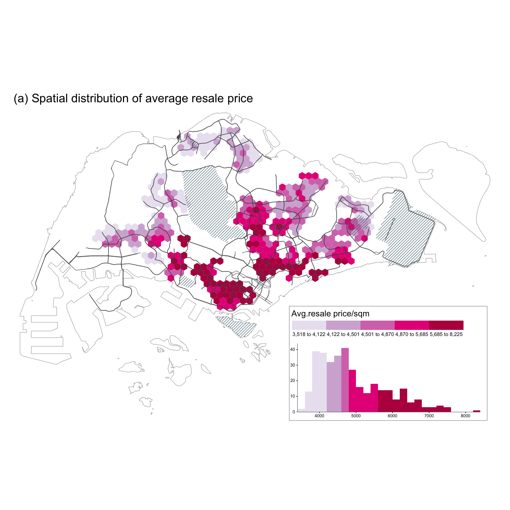
[1] "#EAE4F1" "#D2B3D6" "#D677B9" "#E62887" "#B80A4E"# spatial_viz(mean_resale_sf,
# fill_var = "sd_resale_price_sqm",
# legend_title = "S.D.resale price/sqm",
# main_title = "(a) Spatial distribution of S.D of resale price",
# main.title_size = 1.4,
# legend.hist_height = 0.25, legend.hist_width = 0.5,
# legend_width = 0.4, legend.hist_size = 0.5,
# legend.title_size = 1.2, legend.text_size = 0.65,
# digits = 0, palette = "PuRd")violin_viz(mean_resale_sf, var = "mean_resale_price_sqm",
labs.x = "", labs.y = "Avg.resale price/sqm", breaks = seq(0, 9000, 1000),
y.shift = 1050, x.shift = 1.4, text.size = 4, digits = 0)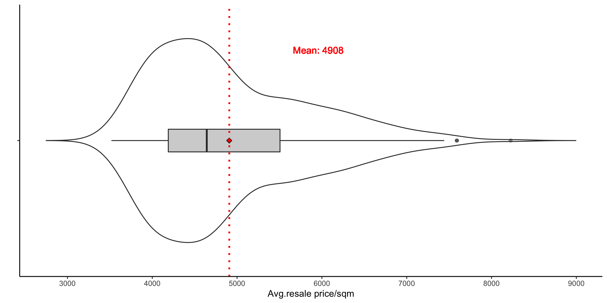
Percentage of 1-ROOM and 2-Room rental flats
#HDB Property Information: https://data.gov.sg/dataset/hdb-property-information
if(file.exists(here("data/derived_data/df_pct_1_2room_rental.rds"))){
df_pct_1_2room_rental <- readRDS(here("data/derived_data/df_pct_1_2room_rental.rds"))
}else{
df_hdb_property <- read_csv(here("data/raw_data/hdb-property-information.csv"))
df_hdb_property_updated <- df_hdb_property %>%
mutate(ROAD_NAME = gsub("\\bDR\\b", "DRIVE", street),
ROAD_NAME = gsub("\\bRD\\b", "ROAD", ROAD_NAME),
ROAD_NAME = gsub("\\bCRES\\b", "CRESCENT", ROAD_NAME),
ROAD_NAME = gsub("\\bAVE\\b", "AVENUE", ROAD_NAME),
ROAD_NAME = gsub("\\bST\\b", "STREET", ROAD_NAME),
ROAD_NAME = gsub("\\bCTRL\\b", "CENTRAL", ROAD_NAME),
ROAD_NAME = gsub("\\bNTH\\b", "NORTH", ROAD_NAME),
ROAD_NAME = gsub("\\bSTH\\b", "SOUTH", ROAD_NAME),
ROAD_NAME = gsub("\\bBT\\b", "BUKIT", ROAD_NAME),
ROAD_NAME = gsub("\\bC'WEALTH\\b", "COMMONWEALTH", ROAD_NAME),
ROAD_NAME = gsub("\\bCL\\b", "CLOSE", ROAD_NAME),
ROAD_NAME = gsub("\\bPK\\b", "PARK", ROAD_NAME),
ROAD_NAME = gsub("\\bJLN\\b", "JALAN", ROAD_NAME),
ROAD_NAME = gsub("\\bKG\\b", "KAMPONG", ROAD_NAME),
ROAD_NAME = gsub("\\bPL\\b", "PLACE", ROAD_NAME),
ROAD_NAME = gsub("\\bLOR\\b", "LORONG", ROAD_NAME),
ROAD_NAME = gsub("\\bTER\\b", "TERRACE", ROAD_NAME),
ROAD_NAME = gsub("\\bMKT\\b", "MARKET", ROAD_NAME),
ROAD_NAME = gsub("\\bUPP\\b", "UPPER", ROAD_NAME),
ROAD_NAME = gsub("\\bGDNS\\b", "GARDENS", ROAD_NAME),
ROAD_NAME = gsub("\\bTG\\b", "TANJONG", ROAD_NAME),
ROAD_NAME = gsub("\\bHTS\\b", "HEIGHTS", ROAD_NAME),
ROAD_NAME = gsub("\\bCTR\\b", "CENTRE", ROAD_NAME)) %>%
mutate(ROAD_NAME = case_when(
ROAD_NAME == "STREET. GEORGE'S LANE" ~ "SAINT GEORGE'S LANE",
ROAD_NAME == "STREET. GEORGE'S ROAD" ~ "SAINT GEORGE'S ROAD",
ROAD_NAME == "SECTOR A SIN MING IND EST" ~ "SECTOR A SIN MING INDUSTRIAL ESTATE",
TRUE ~ ROAD_NAME
)) %>%
dplyr::rename(HOUSE_BLK_ = blk_no) %>%
unite(ROAD_BLK, c("ROAD_NAME", "HOUSE_BLK_")) %>%
dplyr::select(ROAD_BLK, `1room_rental`, `2room_rental`, total_dwelling_units) %>%
mutate(ROAD_BLK = case_when(
ROAD_BLK == "CHOA CHU KANG AVENUE 2_297A" ~ "CHOA CHU KANG AVENUE 2_297",
ROAD_BLK == "CHOA CHU KANG AVENUE 2_297B" ~ "CHOA CHU KANG AVENUE 2_297",
TRUE ~ ROAD_BLK
))
# get extra two Blks that are under 'S' and 'K' building type
extra_building_sf <- df_building %>%
filter(ROAD_NAME %in% c("NEW MARKET ROAD", "JALAN KUKOH") & HOUSE_BLK_ %in% c(1, 32)) %>%
unite(ROAD_BLK, c("ROAD_NAME", "HOUSE_BLK_")) %>%
st_transform(crs = 3414) %>%
dplyr::select(names(hdb_sf))
df_1_2room_rental <- df_hdb_property_updated %>%
filter(total_dwelling_units != 0) %>%
left_join(., rbind(hdb_sf, extra_building_sf)) %>%
st_as_sf() %>%
st_make_valid() %>%
st_join(., grids, largest = T) %>% # join grids
filter(!is.na(grid_id)) %>%
group_by(grid_id) %>%
dplyr::summarise(`1room_rental` = sum(`1room_rental`),
`2room_rental` = sum(`2room_rental`),
total_dwelling_units = sum(total_dwelling_units))
df_pct_1_2room_rental <- df_1_2room_rental %>%
st_set_geometry(NULL) %>%
mutate(pct_1_2room_rental = (`1room_rental` + `2room_rental`)/total_dwelling_units)
saveRDS(df_pct_1_2room_rental, file = here("data/derived_data/df_pct_1_2room_rental.rds"))
}
head(df_pct_1_2room_rental)# A tibble: 6 x 5
grid_id `1room_rental` `2room_rental` total_dwelling_units pct_1_2room_rental
<int> <dbl> <dbl> <dbl> <dbl>
1 286 0 0 795 0
2 304 0 0 99 0
3 321 273 273 4208 0.130
4 338 0 0 1372 0
5 339 0 0 4079 0
6 354 0 0 6653 0 df_pct_1_2room_rental_sf <- df_pct_1_2room_rental %>%
filter(grid_id %in% qualified_grids_inflow) %>%
left_join(., grids, by = c("grid_id" = "grid_id")) %>%
st_sf()
spatial_viz(df_pct_1_2room_rental_sf,
fill_var = "pct_1_2room_rental",
legend_title = "1&2 Room rentals (%)",
main_title = "(b) Spatial distribution of 1-Room and 2-Room rentals",
main.title_size = 1.4,
legend.hist_height = 0.25, legend.hist_width = 0.5,
legend_width = 0.4, legend.hist_size = 0.5,
legend.title_size = 1.2, legend.text_size = 0.65, palette = "PuRd",
style = "fixed",
breaks = c(0, 0.05, 0.1, 0.3, 0.5, 0.8))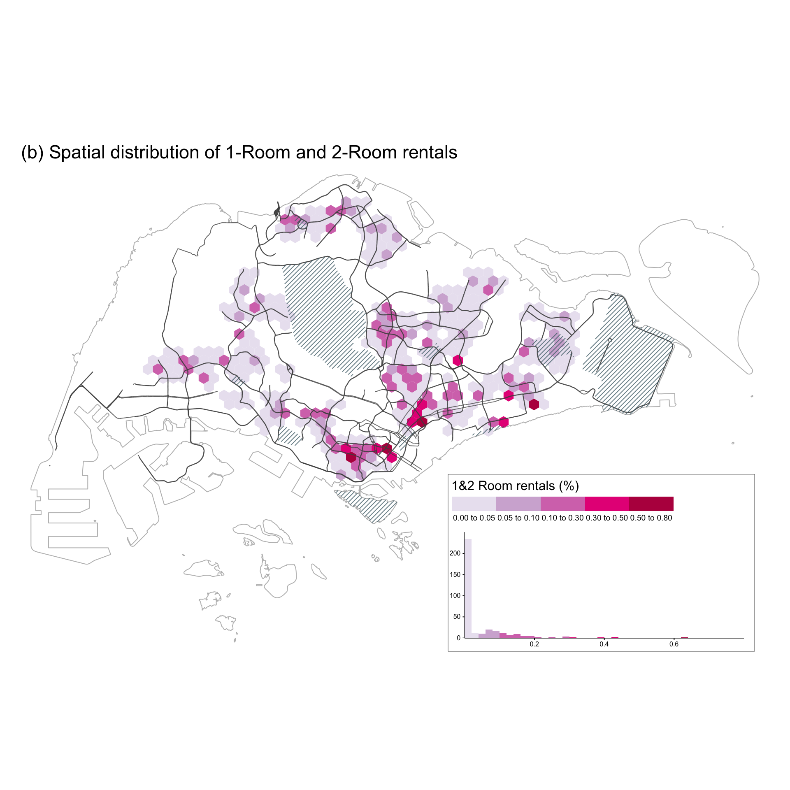
[1] "#EAE4F1" "#D2B3D6" "#D677B9" "#E62887" "#B80A4E"violin_viz(df_pct_1_2room_rental_sf,
var = "pct_1_2room_rental",
labs.x = "", labs.y = "1-Room & 2-Room Rentals (%)",
breaks = seq(0, 0.8, 0.1),
y.shift = 0.13, x.shift = 1.4, text.size = 4)
Landuse: Percentage of industrial building
cal_building_area <- function(index, building_sf){
# intersect with grids
intersect_grid <- building_sf %>%
filter(FEA_ID == index) %>%
st_make_valid() %>%
st_intersection(., grids)
# intersect area in grids
intersect_grid %>%
st_set_geometry(NULL) %>%
dplyr::mutate(area_sqm = st_area(intersect_grid) %>% as.numeric()) %>%
dplyr::select(FEA_ID, grid_id, area_sqm)
}
if(file.exists(here("data/derived_data/industrial_areas_grids.rds"))){
industrial_areas_grids <- readRDS(here("data/derived_data/industrial_areas_grids.rds"))
}else{
#building type: I
industrial_sf <- df_building %>%
filter(BLDG_TYPE_ == "I") %>%
filter(DATA_TYPE_ == "extg") %>% # Existing building outline
st_transform(crs = 3414) %>%
unite(ROAD_BLK, c("ROAD_NAME", "HOUSE_BLK_"), sep = " ")
FEA_indexes <- industrial_sf$FEA_ID
# industrial building areas in grids
industrial_areas_grids <- do.call(bind_rows, map(FEA_indexes, with_progress(function(x) cal_building_area(x, industrial_sf))))
# percentage of commercial areas in grids
industrial_areas_grids <- industrial_areas_grids %>%
group_by(grid_id) %>%
dplyr::summarise(industrial_area_sqm = sum(area_sqm)) %>%
mutate(grid_area = st_area(grids[1, ]) %>% as.numeric(),
pct_industrial_area = round(industrial_area_sqm/grid_area, 4))
saveRDS(industrial_areas_grids, file = here("data/derived_data/industrial_areas_grids.rds"))
}
head(industrial_areas_grids)# A tibble: 6 x 4
grid_id industrial_area_sqm grid_area pct_industrial_area
<int> <dbl> <dbl> <dbl>
1 8 1044. 487139. 0.0021
2 9 7940. 487139. 0.0163
3 13 7004. 487139. 0.0144
4 14 25922. 487139. 0.0532
5 16 209. 487139. 0.0004
6 19 29082. 487139. 0.0597industrial_areas_grids_sf <- industrial_areas_grids %>%
filter(grid_id %in% qualified_grids_inflow) %>%
left_join(grids %>% filter(grid_id %in% qualified_grids_inflow), ., by = c("grid_id" = "grid_id")) %>%
replace(., is.na(.), 0) %>%
st_sf()
spatial_viz(industrial_areas_grids_sf,
fill_var = "pct_industrial_area",
legend_title = "Industrial area (%)",
main_title = "(c) Spatial distribution of industrial area",
main.title_size = 1.4,
legend.hist_height = 0.25, legend.hist_width = 0.5,
legend_width = 0.4, legend.hist_size = 0.5,
legend.title_size = 1.2, legend.text_size = 0.65, palette = "PuRd",
style = "fixed",
breaks = c(0, 0.05, 0.1, 0.15, 0.2, 0.25))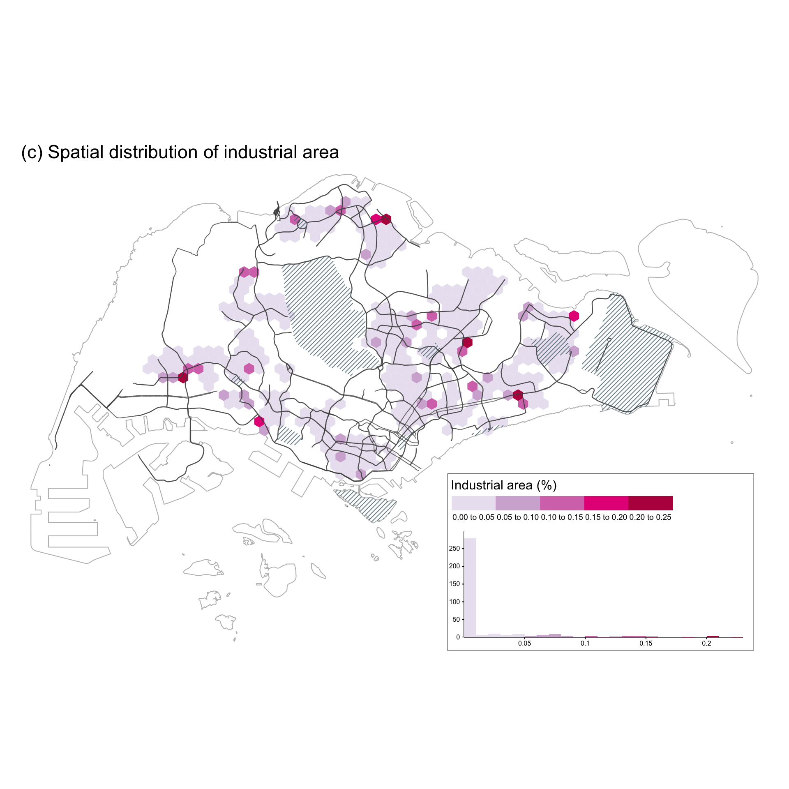
[1] "#EAE4F1" "#D2B3D6" "#D677B9" "#E62887" "#B80A4E"violin_viz(industrial_areas_grids_sf,
var = "pct_industrial_area",
labs.x = "", labs.y = "Industrial area (%)",
breaks = seq(0, 0.25, 0.05), digits = 3,
y.shift = 0.04, x.shift = 1.4, text.size = 4)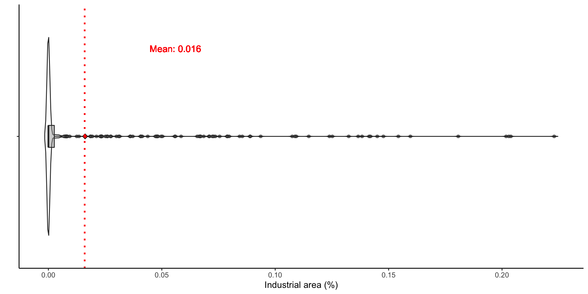
Landuse: Percentage of residential building
if(file.exists(here("data/derived_data/residential_areas_grids.rds"))){
residential_areas_grids <- readRDS(here("data/derived_data/residential_areas_grids.rds"))
}else{
#building type: C-Condominium, H-HDB Building, A-Apartment, E-Executive Condominium, R-Residential
residential_sf <- df_building %>%
filter(BLDG_TYPE_ %in% c("C", "H", "A", "E", "R")) %>%
filter(DATA_TYPE_ == "extg") %>% # Existing building outline
st_transform(crs = 3414) %>%
unite(ROAD_BLK, c("ROAD_NAME", "HOUSE_BLK_"), sep = " ")
FEA_indexes <- residential_sf$FEA_ID
# residential areas in grids
residential_areas_grids <- do.call(bind_rows, map(FEA_indexes, with_progress(function(x) cal_building_area(x, residential_sf))))
# percentage of residential areas in grids
residential_areas_grids <- residential_areas_grids %>%
group_by(grid_id) %>%
dplyr::summarise(residential_area_sqm = sum(area_sqm)) %>%
mutate(grid_area = st_area(grids[1, ]) %>% as.numeric(),
pct_residential_area = round(residential_area_sqm/grid_area, 4))
saveRDS(residential_areas_grids, file = here("data/derived_data/residential_areas_grids.rds"))
}
head(residential_areas_grids)# A tibble: 6 x 4
grid_id residential_area_sqm grid_area pct_residential_area
<int> <dbl> <dbl> <dbl>
1 286 9461. 487139. 0.0194
2 304 563. 487139. 0.00120
3 321 72846. 487139. 0.150
4 338 13626. 487139. 0.028
5 339 57370. 487139. 0.118
6 354 75537. 487139. 0.155 residential_areas_grids_sf <- residential_areas_grids %>%
filter(grid_id %in% qualified_grids_inflow) %>%
left_join(., grids, by = c("grid_id" = "grid_id")) %>%
st_sf()
spatial_viz(residential_areas_grids_sf,
fill_var = "pct_residential_area",
legend_title = "Residential area (%)",
main_title = "(d) Spatial distribution of residential area",
main.title_size = 1.4,
legend.hist_height = 0.25, legend.hist_width = 0.5,
legend_width = 0.4, legend.hist_size = 0.5,
legend.title_size = 1.2, legend.text_size = 0.65,
palette = "PuRd")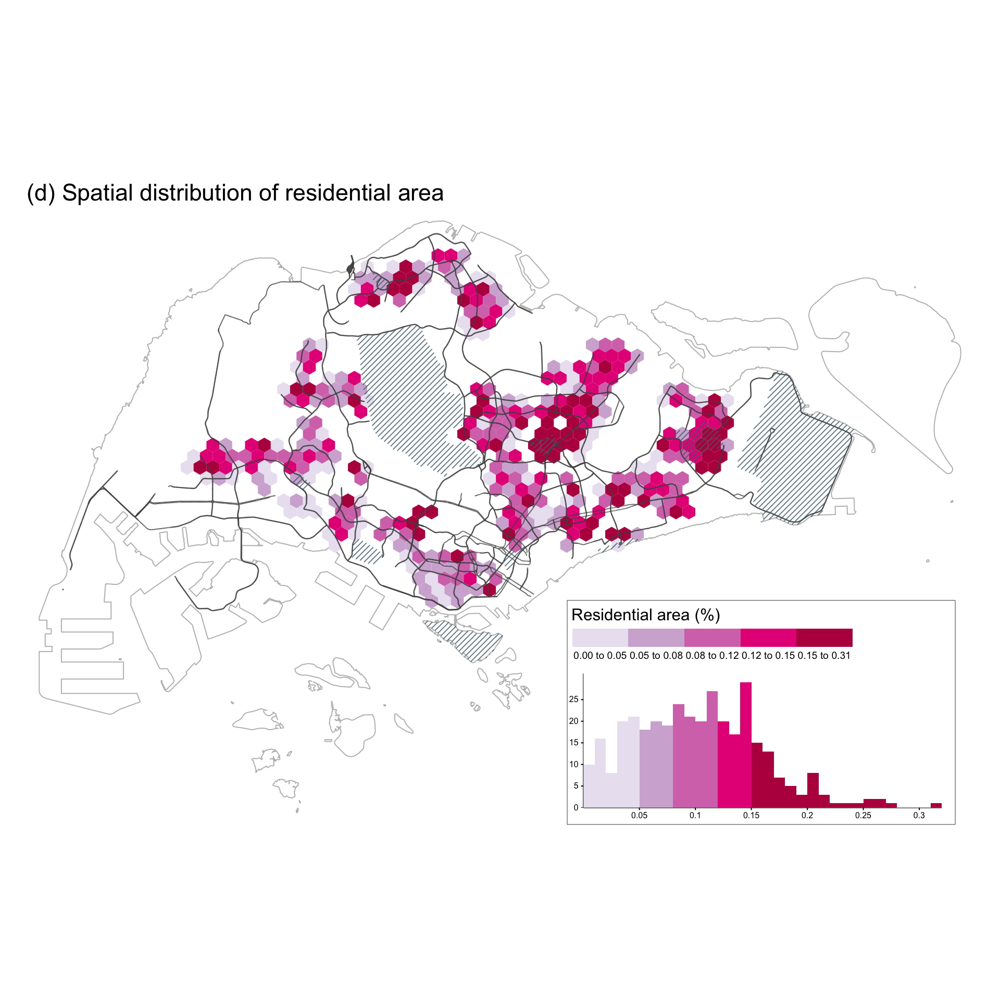
[1] "#EAE4F1" "#D2B3D6" "#D677B9" "#E62887" "#B80A4E"violin_viz(residential_areas_grids_sf,
var = "pct_residential_area",
labs.x = "", labs.y = "Residential area (%)",
breaks = seq(0, 0.32, 0.05),
y.shift = 0.06, x.shift = 1.55, text.size = 4)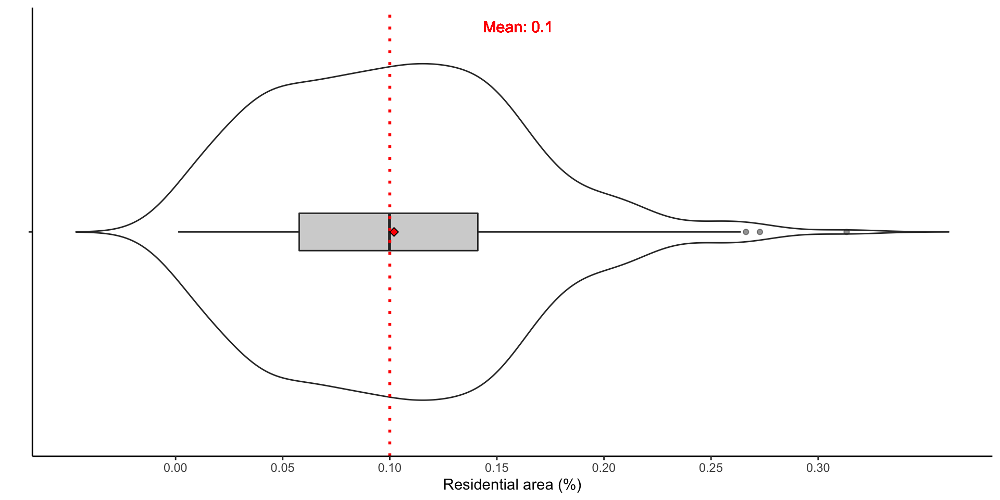
Distance to the nearest MRT station
cal_dist2nearestMRT <- function(grid_index, grids, mrt){
grid_centroid <- grids[grid_index, ] %>% st_centroid()
# create 20k buffer
grid_buffer <- grid_centroid %>% st_buffer(20000)
# get MRT stations within the buffer
mrt_station_in_buffer <- grid_buffer %>%
st_join(mrt, .) %>%
filter(!is.na(grid_id))
# distance from grid centroid to MRT stations
dist2MRT <- st_distance(st_geometry(grid_centroid), st_geometry(mrt_station_in_buffer), by_element = TRUE) %>% as.numeric()
# get the nearest distance
mrt_station_in_buffer %>%
st_set_geometry(NULL) %>%
mutate(dist2MRT_km = round(dist2MRT/1000, 4)) %>%
arrange(dist2MRT_km) %>%
slice(1)
}
if(file.exists(here("data/derived_data/dist2MRT_nearest.rds"))){
dist2MRT_nearest <- readRDS(here("data/derived_data/dist2MRT_nearest.rds"))
}else{
# MRT station
mrt <- read_sf(here("data/raw_data/TrainStation_Jan2020/MRTLRTStnPtt.Shp"), quiet = T) %>%
st_transform(crs = 3414)
dist2MRT_nearest <- do.call(bind_rows, map(grids$grid_id, with_progress(function(x) cal_dist2nearestMRT(x, grids, mrt))))
saveRDS(dist2MRT_nearest, file = here("data/derived_data/dist2MRT_nearest.rds"))
}
head(dist2MRT_nearest) OBJECTID STN_NAME STN_NO grid_id dist2MRT_km
1 25 TUAS CRESCENT MRT STATION EW31 1 12.4307
2 25 TUAS CRESCENT MRT STATION EW31 2 11.2449
3 25 TUAS CRESCENT MRT STATION EW31 3 10.0871
4 25 TUAS CRESCENT MRT STATION EW31 4 8.9681
5 25 TUAS CRESCENT MRT STATION EW31 5 7.9044
6 25 TUAS CRESCENT MRT STATION EW31 6 11.6869dist2MRT_nearest_sf <- dist2MRT_nearest %>%
filter(grid_id %in% qualified_grids_inflow) %>%
left_join(., grids, by = c("grid_id" = "grid_id")) %>%
st_sf()
spatial_viz(dist2MRT_nearest_sf,
fill_var = "dist2MRT_km",
legend_title = "Distance (km)",
main_title = "(e) Spatial distribution of distance to the nearest MRT station",
main.title_size = 1.4,
legend.hist_height = 0.25, legend.hist_width = 0.5,
legend_width = 0.4, legend.hist_size = 0.5,
legend.title_size = 1.2, legend.text_size = 0.65,
palette = "PuRd")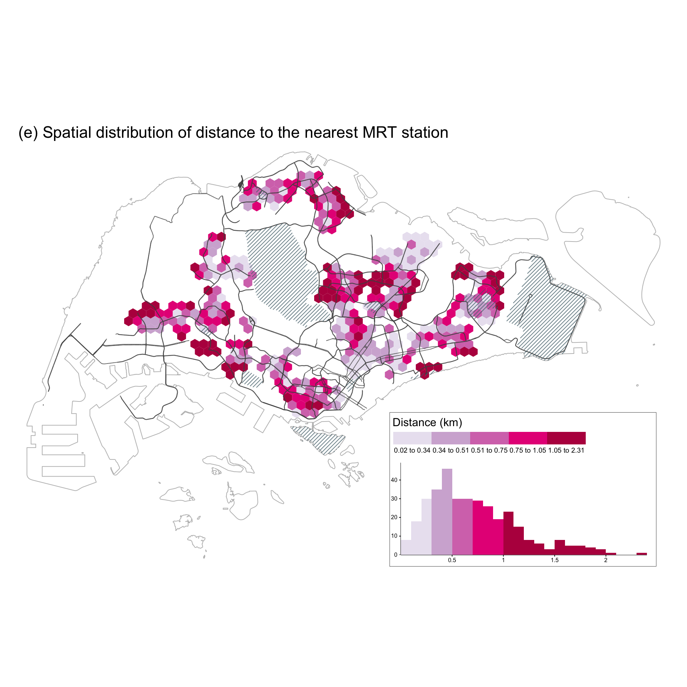
[1] "#EAE4F1" "#D2B3D6" "#D677B9" "#E62887" "#B80A4E"violin_viz(dist2MRT_nearest_sf,
var = "dist2MRT_km",
labs.x = "", labs.y = "Distance (km)",
breaks = seq(0, 2.5, 0.5),
y.shift = 0.5, x.shift = 1.4, text.size = 4)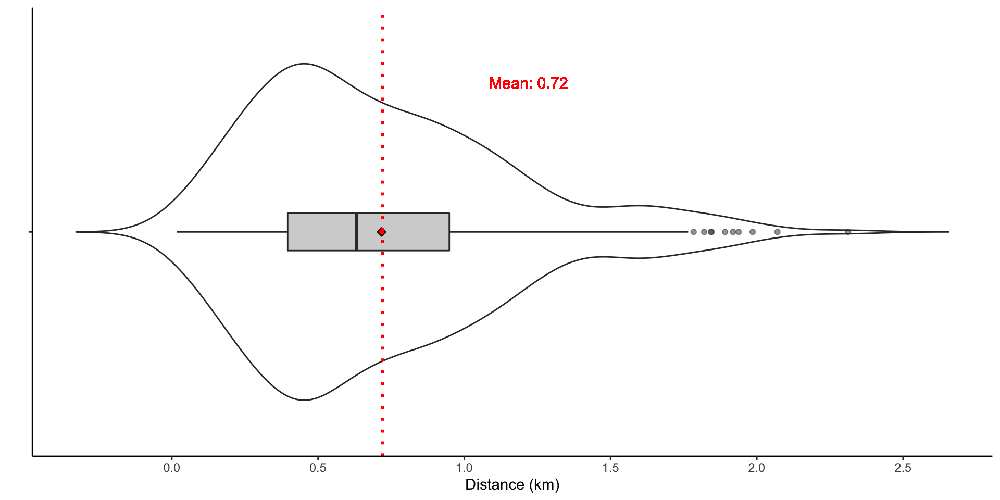
Distance from grid to ‘center’ grid 1232 - City Hall
center_grid <- grid_centroids %>% filter(grid_id == 1232)
dist2_center_grid <- grid_centroids %>%
mutate(dist_grid2center = st_distance(., center_grid) %>% as.numeric(),
dist_grid2center_km = dist_grid2center/1000) %>%
st_set_geometry(NULL)
head(dist2_center_grid)# A tibble: 6 x 3
grid_id dist_grid2center dist_grid2center_km
<int> <dbl> <dbl>
1 1 28648. 28.6
2 2 28292. 28.3
3 3 27992. 28.0
4 4 27750 27.8
5 5 27567. 27.6
6 6 28102. 28.1dist2_center_grid_sf <- dist2_center_grid %>%
filter(grid_id %in% qualified_grids_inflow) %>%
left_join(., grids, by = c("grid_id" = "grid_id")) %>% st_sf()
spatial_viz(dist2_center_grid_sf,
fill_var = "dist_grid2center_km",
legend_title = "Distance (km)",
main_title = "(f) Spatial distribution of distance to the central location",
main.title_size = 1.4,
legend.hist_height = 0.25, legend.hist_width = 0.5,
legend_width = 0.4, legend.hist_size = 0.5,
legend.title_size = 1.2, legend.text_size = 0.65,
palette = "PuRd")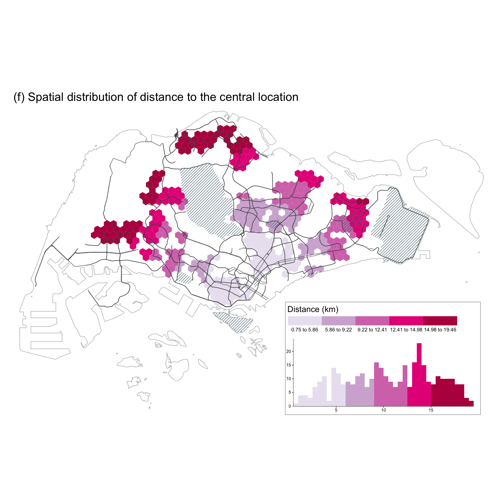
[1] "#EAE4F1" "#D2B3D6" "#D677B9" "#E62887" "#B80A4E"violin_viz(dist2_center_grid_sf,
var = "dist_grid2center_km",
labs.x = "", labs.y = "Distance (km)",
breaks = seq(0, 20, 5),
y.shift = 5, x.shift = 1.55, text.size = 4)
Dependent variables
Travel distance
# visitors travel distance
mean_dist_inflow <- dist_inflow %>%
group_by(grid_id, u_id) %>%
dplyr::summarise(mean_dist_user = mean(dist_hm2grid_km)) %>%
group_by(grid_id) %>%
dplyr::summarise(mean_dist_km = mean(mean_dist_user)) %>%
mutate(user_type = "visitor")
# locals travel distance
mean_dist_outflow <- dist_outflow %>%
group_by(home, u_id) %>%
dplyr::summarise(mean_dist_user = mean(dist_hm2grid_km)) %>%
group_by(home) %>%
dplyr::summarise(mean_dist_km = mean(mean_dist_user)) %>%
dplyr::rename(grid_id = home) %>% mutate(user_type = "local")ggplot(bind_rows(mean_dist_inflow, mean_dist_outflow)) +
geom_density(aes(mean_dist_km, fill = user_type, color = user_type), alpha = 0.5) +
geom_vline(data = bind_rows(mean_dist_inflow, mean_dist_outflow) %>% group_by(user_type) %>% dplyr::summarise(mean = mean(mean_dist_km)), aes(xintercept = mean, color = user_type), size=1.5) +
theme_bw() +
theme(legend.position = c(0.9, 0.9)) +
labs(x = "Avg.distance (km)", y = "Density", fill = "User type", color = "User type")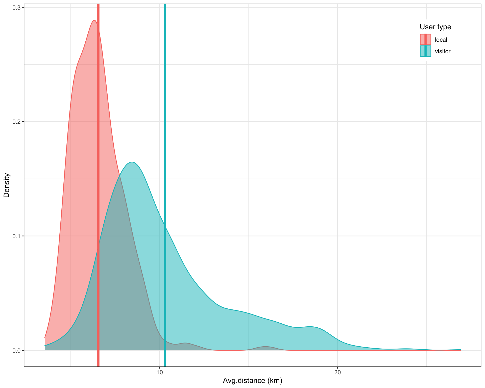
Mobility diversity
combinded_div <- div_inflow %>%
st_set_geometry(NULL) %>%
mutate(div_type = "Inflow") %>%
bind_rows(.,
div_outflow %>%
st_set_geometry(NULL) %>%
mutate(div_type = "Outflow")) %>%
mutate(div_type = factor(div_type, levels = c("Outflow", "Inflow")))
combinded_div_mean <- combinded_div %>%
group_by(div_type) %>%
dplyr::summarise(mean = mean(norm_div_shannon)) %>%
mutate(div_type = factor(div_type, levels = c("Outflow", "Inflow")))
ggplot(combinded_div, aes(norm_div_shannon, color = div_type, fill = div_type)) +
geom_density(alpha = 0.5) +
geom_vline(data = combinded_div_mean, aes(xintercept = mean, color = div_type), size = 1.5) +
scale_x_continuous(breaks = seq(0, 1, 0.2)) +
labs(x = "Normalized diversity", y = "Density", title = "Density distribution of normalized diversity", fill = "Diversity type", color = "Diversity type") +
theme_bw() +
theme(legend.position = c(0.1, 0.9))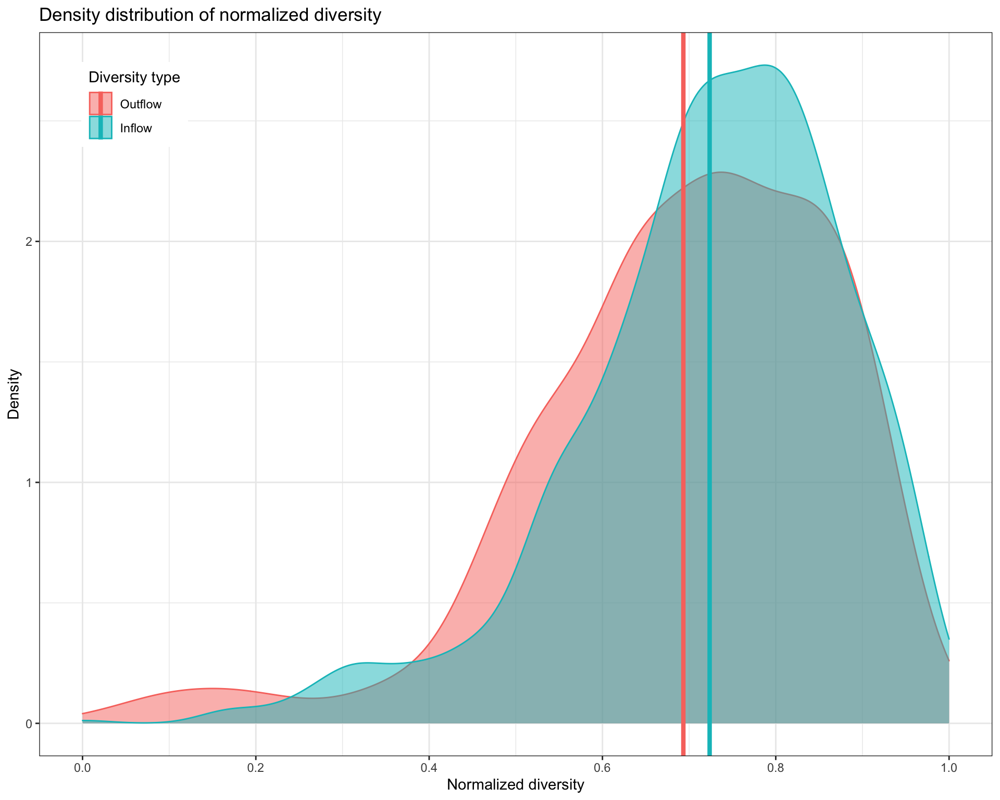
Regression analysis
Inflow travel distance
## gather independent and dependent variables
reg_inflow_dist <- mean_resale %>%
filter(grid_id %in% qualified_grids_inflow) %>%
left_join(., mean_dist_inflow %>% dplyr::select(-user_type)) %>%
left_join(., industrial_areas_grids %>% dplyr::select(grid_id, pct_industrial_area)) %>%
left_join(., residential_areas_grids %>% dplyr::select(grid_id, pct_residential_area)) %>%
left_join(., dist2MRT_nearest %>% dplyr::select(grid_id, dist2MRT_km)) %>%
left_join(., df_pct_1_2room_rental %>% dplyr::select(grid_id, pct_1_2room_rental)) %>%
left_join(., dist2_center_grid %>% dplyr::select(grid_id, dist_grid2center_km)) %>%
replace(., is.na(.), 0)
head(reg_inflow_dist)# A tibble: 6 x 9
grid_id mean_resale_price_s… sd_resale_price_s… mean_dist_km pct_industrial_a…
<dbl> <dbl> <dbl> <dbl> <dbl>
1 286 3685. 396. 14.7 0
2 304 3571. 323. 12.6 0
3 321 3808. 445. 14.0 0
4 338 4775. 464. 11.2 0.0936
5 339 3518. 253. 13.9 0
6 354 4186. 461. 13.1 0
# … with 4 more variables: pct_residential_area <dbl>, dist2MRT_km <dbl>,
# pct_1_2room_rental <dbl>, dist_grid2center_km <dbl>OLS
Formula: Inflow distance ~ HDB resale price + Percentage of 1 ROOM and 2 Room rentals + Percentage of industrial building + Percentage of residential building + Distance to the nearest MRT station + Distance to the central grid)
ols_inflow_dist <- lm(mean_dist_km ~ mean_resale_price_sqm + pct_1_2room_rental + pct_industrial_area + pct_residential_area + dist2MRT_km + dist_grid2center_km, data = reg_inflow_dist)
summary(ols_inflow_dist)
Call:
lm(formula = mean_dist_km ~ mean_resale_price_sqm + pct_1_2room_rental +
pct_industrial_area + pct_residential_area + dist2MRT_km +
dist_grid2center_km, data = reg_inflow_dist)
Residuals:
Min 1Q Median 3Q Max
-2.8272 -0.9806 -0.0888 0.8180 4.5572
Coefficients:
Estimate Std. Error t value Pr(>|t|)
(Intercept) 2.1725265 0.9489659 2.289 0.02266 *
mean_resale_price_sqm 0.0009083 0.0001338 6.787 4.98e-11 ***
pct_1_2room_rental 1.9795891 0.7186578 2.755 0.00619 **
pct_industrial_area -4.2909212 2.0240122 -2.120 0.03472 *
pct_residential_area -2.4026791 1.3876470 -1.731 0.08426 .
dist2MRT_km 0.3202552 0.1755298 1.825 0.06894 .
dist_grid2center_km 0.2124682 0.0259493 8.188 5.18e-15 ***
---
Signif. codes: 0 '***' 0.001 '**' 0.01 '*' 0.05 '.' 0.1 ' ' 1
Residual standard error: 1.36 on 346 degrees of freedom
Multiple R-squared: 0.1888, Adjusted R-squared: 0.1747
F-statistic: 13.42 on 6 and 346 DF, p-value: 1.091e-13spatial_viz(augment(ols_inflow_dist, data = reg_inflow_dist) %>% left_join(., grids) %>% st_as_sf(),
fill_var = ".resid", palette = "RdBu",
legend_title = "Residual (OLS)",
main_title = "(a) Residuals of average incoming distance (Moran I statistic: 0.78)",
main.title_size = 1.6,
legend.hist_height = 0.25, legend.hist_width = 0.5,
legend_width = 0.4, legend.hist_size = 0.5,
legend.title_size = 1.2, legend.text_size = 0.65)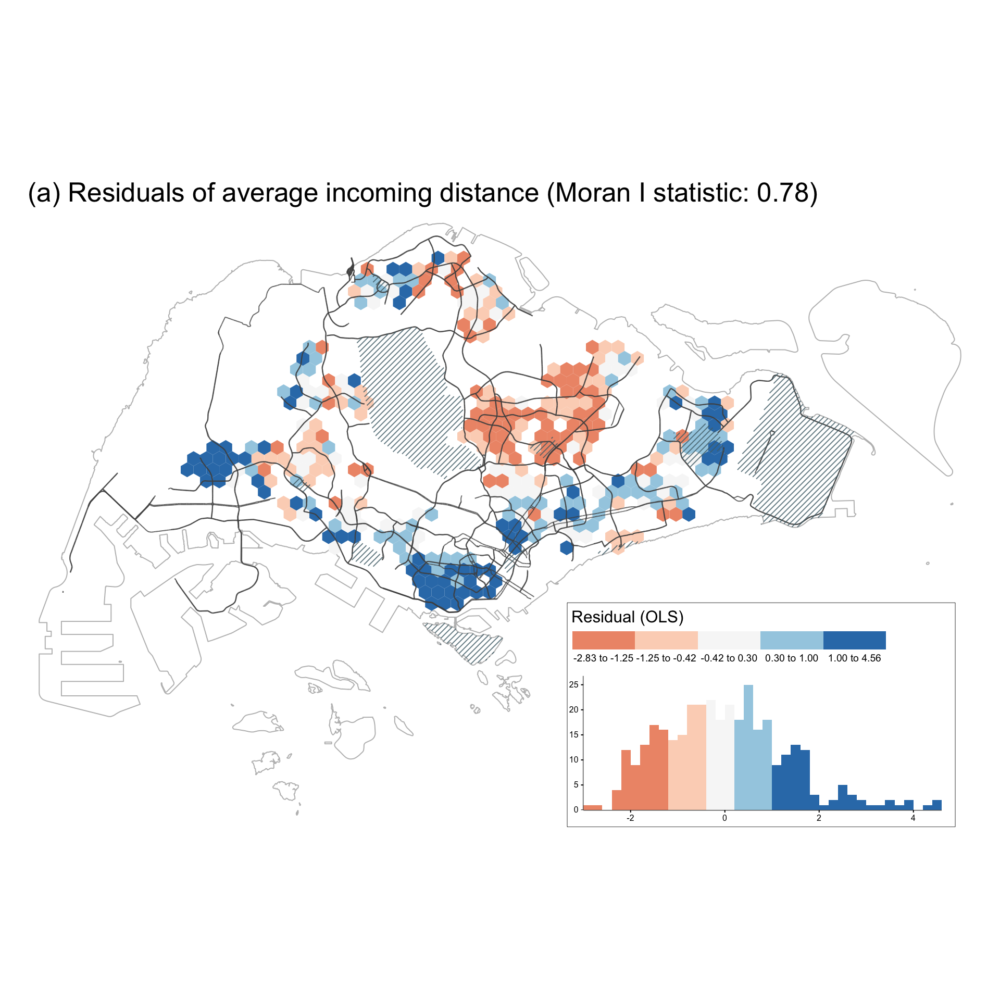
[1] "#EE9777" "#FCD5C0" "#F7F7F7" "#A4CEE3" "#327CB7"Spatial Error Model (SEM)
sf_reg_inflow_dist <- reg_inflow_dist %>%
left_join(., grids) %>%
st_as_sf() %>%
st_transform(crs = 4326)
dist_inflow_sp <- as(sf_reg_inflow_dist, 'Spatial')
dist_inflow_neighbors <- poly2nb(dist_inflow_sp)
summary(dist_inflow_neighbors)Neighbour list object:
Number of regions: 353
Number of nonzero links: 1466
Percentage nonzero weights: 1.17648
Average number of links: 4.152975
Link number distribution:
1 2 3 4 5 6
4 39 76 86 76 72
4 least connected regions:
128 244 247 302 with 1 link
72 most connected regions:
6 9 10 19 38 46 53 57 70 75 77 93 107 109 115 123 126 130 131 134 137 138 142 147 163 164 167 170 171 175 176 179 185 190 192 193 198 200 204 206 209 211 212 216 217 221 231 257 258 262 263 264 268 269 270 273 274 281 286 291 307 308 314 317 324 332 338 341 342 343 345 346 with 6 linksdist_inflow_weights <- nb2listw(dist_inflow_neighbors, style="W", zero.policy=TRUE)moran.test(dist_inflow_sp$mean_dist_km, dist_inflow_weights)
Moran I test under randomisation
data: dist_inflow_sp$mean_dist_km
weights: dist_inflow_weights
Moran I statistic standard deviate = 20.366, p-value < 2.2e-16
alternative hypothesis: greater
sample estimates:
Moran I statistic Expectation Variance
0.777633909 -0.002840909 0.001468666 sem_inflow_dist <- spatialreg::errorsarlm(mean_dist_km ~ mean_resale_price_sqm + pct_1_2room_rental + pct_industrial_area + pct_residential_area + pct_industrial_area + dist2MRT_km + dist_grid2center_km, data = reg_inflow_dist, listw = dist_inflow_weights)
summary(sem_inflow_dist)
Call:spatialreg::errorsarlm(formula = mean_dist_km ~ mean_resale_price_sqm +
pct_1_2room_rental + pct_industrial_area + pct_residential_area +
pct_industrial_area + dist2MRT_km + dist_grid2center_km,
data = reg_inflow_dist, listw = dist_inflow_weights)
Residuals:
Min 1Q Median 3Q Max
-1.882582 -0.461242 -0.059318 0.468540 2.693693
Type: error
Coefficients: (asymptotic standard errors)
Estimate Std. Error z value Pr(>|z|)
(Intercept) 7.6813e+00 8.6433e-01 8.8870 < 2.2e-16
mean_resale_price_sqm 4.9152e-05 1.0561e-04 0.4654 0.641649
pct_1_2room_rental 5.1959e-01 4.1127e-01 1.2634 0.206444
pct_industrial_area -3.2302e+00 1.2701e+00 -2.5433 0.010982
pct_residential_area 2.4437e+00 8.8488e-01 2.7616 0.005752
dist2MRT_km -2.3525e-01 1.5047e-01 -1.5634 0.117956
dist_grid2center_km 7.9053e-02 4.4728e-02 1.7674 0.077161
Lambda: 0.80697, LR test value: 318.77, p-value: < 2.22e-16
Asymptotic standard error: 0.026271
z-value: 30.717, p-value: < 2.22e-16
Wald statistic: 943.52, p-value: < 2.22e-16
Log likelihood: -446.3775 for error model
ML residual variance (sigma squared): 0.56934, (sigma: 0.75455)
Number of observations: 353
Number of parameters estimated: 9
AIC: 910.76, (AIC for lm: 1227.5)sf_reg_inflow_dist$resid_error <- residuals(sem_inflow_dist)
spatial_viz(sf_reg_inflow_dist,
fill_var = "resid_error",
legend_title = "Residual (SEM)", palette = "RdBu",
main_title = "(a) Residuals of average incoming distance (Moran I statistic: - 0.09)",
main.title_size = 1.6,
legend.hist_height = 0.25, legend.hist_width = 0.5,
legend_width = 0.4, legend.hist_size = 0.5,
legend.title_size = 1.2, legend.text_size = 0.65)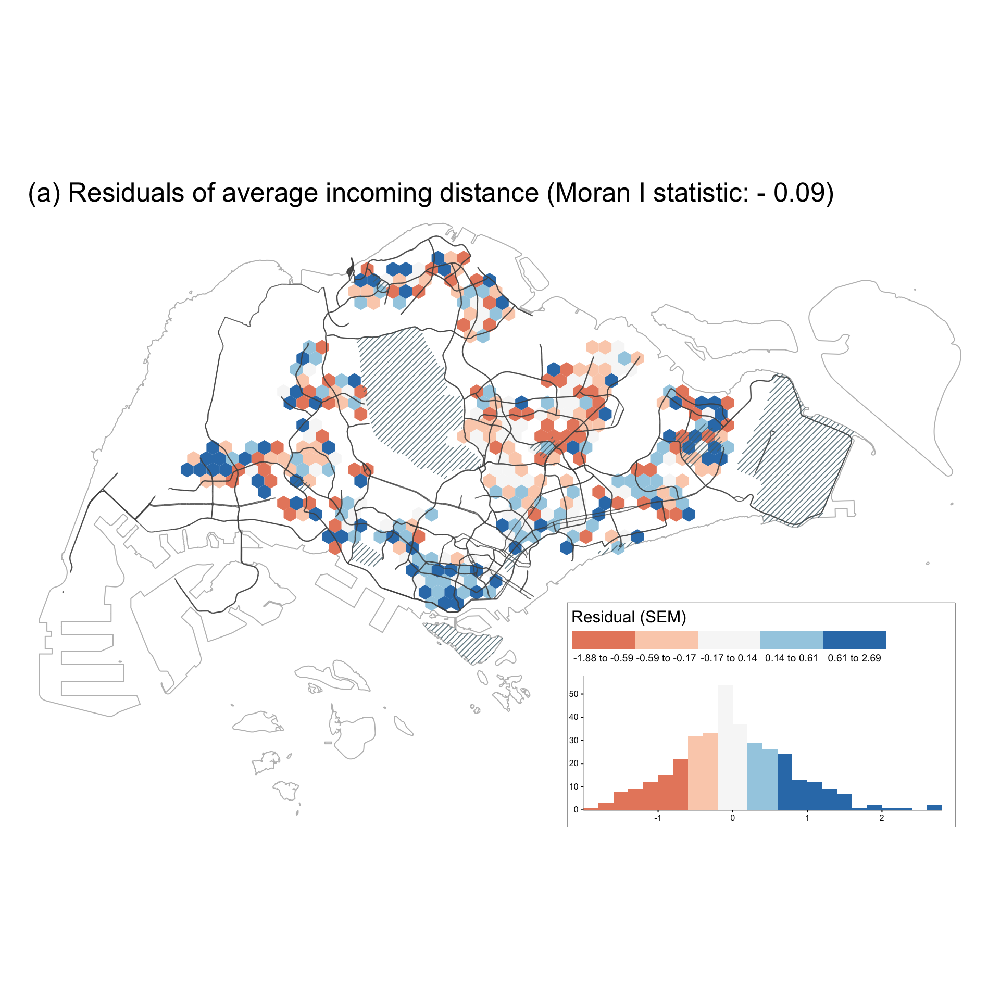
[1] "#E8896C" "#FBD0B9" "#F7F7F7" "#A4CEE3" "#327CB7"moran.test(sf_reg_inflow_dist$resid_error, dist_inflow_weights)
Moran I test under randomisation
data: sf_reg_inflow_dist$resid_error
weights: dist_inflow_weights
Moran I statistic standard deviate = -2.344, p-value = 0.9905
alternative hypothesis: greater
sample estimates:
Moran I statistic Expectation Variance
-0.092696925 -0.002840909 0.001469509 Spatial Lag Model (SLM)
slm_inflow_dist <- spatialreg::lagsarlm(mean_dist_km ~ mean_resale_price_sqm + pct_1_2room_rental + pct_industrial_area + pct_residential_area + dist2MRT_km + dist_grid2center_km, data = reg_inflow_dist, listw = dist_inflow_weights)
summary(slm_inflow_dist)
Call:spatialreg::lagsarlm(formula = mean_dist_km ~ mean_resale_price_sqm +
pct_1_2room_rental + pct_industrial_area + pct_residential_area +
dist2MRT_km + dist_grid2center_km, data = reg_inflow_dist,
listw = dist_inflow_weights)
Residuals:
Min 1Q Median 3Q Max
-1.95644 -0.45995 -0.07117 0.48707 3.07624
Type: lag
Coefficients: (asymptotic standard errors)
Estimate Std. Error z value Pr(>|z|)
(Intercept) 4.0175e-01 5.5647e-01 0.7220 0.470315
mean_resale_price_sqm 1.9368e-04 7.7345e-05 2.5041 0.012276
pct_1_2room_rental 9.2312e-01 4.0807e-01 2.2622 0.023686
pct_industrial_area -3.3336e+00 1.1510e+00 -2.8962 0.003777
pct_residential_area 9.4708e-01 7.8746e-01 1.2027 0.229090
dist2MRT_km 2.6737e-02 9.9614e-02 0.2684 0.788384
dist_grid2center_km 4.8355e-02 1.5185e-02 3.1843 0.001451
Rho: 0.77437, LR test value: 313.67, p-value: < 2.22e-16
Asymptotic standard error: 0.028889
z-value: 26.805, p-value: < 2.22e-16
Wald statistic: 718.51, p-value: < 2.22e-16
Log likelihood: -448.9292 for lag model
ML residual variance (sigma squared): 0.59504, (sigma: 0.77139)
Number of observations: 353
Number of parameters estimated: 9
AIC: 915.86, (AIC for lm: 1227.5)
LM test for residual autocorrelation
test value: 18.762, p-value: 1.4813e-05impacts(slm_inflow_dist, listw = dist_inflow_weights)Impact measures (lag, exact):
Direct Indirect Total
mean_resale_price_sqm 0.0002574146 6.009907e-04 8.584054e-04
pct_1_2room_rental 1.2268870670 2.864436e+00 4.091323e+00
pct_industrial_area -4.4305373182 -1.034406e+01 -1.477460e+01
pct_residential_area 1.2587262139 2.938772e+00 4.197498e+00
dist2MRT_km 0.0355354921 8.296538e-02 1.185009e-01
dist_grid2center_km 0.0642673292 1.500461e-01 2.143135e-01sf_reg_inflow_dist$resid_lagsarlm <- residuals(slm_inflow_dist)
spatial_viz(sf_reg_inflow_dist,
fill_var = "resid_lagsarlm",
legend_title = "Residual (SLM)",
palette = "RdBu",
main_title = "(a) Residuals of average incoming distance (Moran I statistic: - 0.08)",
main.title_size = 1.6,
legend.hist_height = 0.25, legend.hist_width = 0.5,
legend_width = 0.4, legend.hist_size = 0.5,
legend.title_size = 1.2, legend.text_size = 0.65)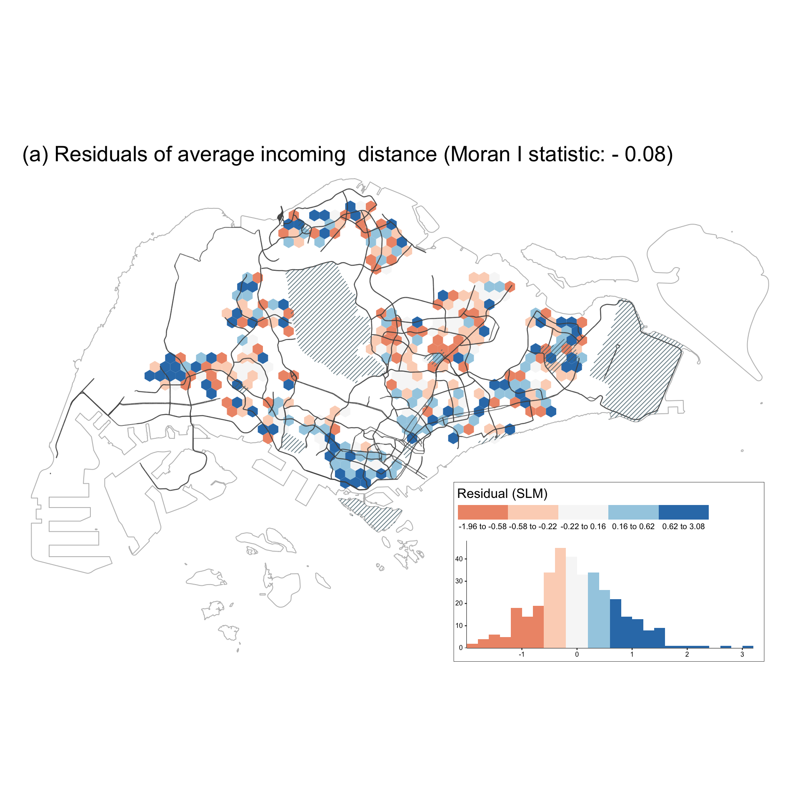
[1] "#EE9777" "#FCD5C0" "#F7F7F7" "#A4CEE3" "#327CB7"moran.test(sf_reg_inflow_dist$resid_lagsarlm, dist_inflow_weights)
Moran I test under randomisation
data: sf_reg_inflow_dist$resid_lagsarlm
weights: dist_inflow_weights
Moran I statistic standard deviate = -2.1227, p-value = 0.9831
alternative hypothesis: greater
sample estimates:
Moran I statistic Expectation Variance
-0.084194423 -0.002840909 0.001468820 # compare three models
AIC(ols_inflow_dist, slm_inflow_dist, sem_inflow_dist) df AIC
ols_inflow_dist 8 1227.5269
slm_inflow_dist 9 915.8584
sem_inflow_dist 9 910.7551Outflow travel distance
reg_outflow_dist <- mean_resale %>%
filter(grid_id %in% qualified_grids_outflow) %>%
left_join(., mean_dist_inflow %>% dplyr::select(-user_type)) %>%
left_join(., industrial_areas_grids %>% dplyr::select(grid_id, pct_industrial_area)) %>%
left_join(., residential_areas_grids %>% dplyr::select(grid_id, pct_residential_area)) %>%
left_join(., dist2MRT_nearest %>% dplyr::select(grid_id, dist2MRT_km)) %>%
# left_join(., pop_grids_2016) %>%
left_join(., df_pct_1_2room_rental %>% dplyr::select(grid_id, pct_1_2room_rental)) %>%
left_join(., dist2_center_grid %>% dplyr::select(grid_id, dist_grid2center_km)) %>%
replace(., is.na(.), 0)
head(reg_outflow_dist)# A tibble: 6 x 9
grid_id mean_resale_price_s… sd_resale_price_s… mean_dist_km pct_industrial_a…
<dbl> <dbl> <dbl> <dbl> <dbl>
1 286 3685. 396. 14.7 0
2 304 3571. 323. 12.6 0
3 321 3808. 445. 14.0 0
4 338 4775. 464. 11.2 0.0936
5 339 3518. 253. 13.9 0
6 354 4186. 461. 13.1 0
# … with 4 more variables: pct_residential_area <dbl>, dist2MRT_km <dbl>,
# pct_1_2room_rental <dbl>, dist_grid2center_km <dbl>OLS
Formula: Outflow distance ~ HDB resale price + Percentage of 1 ROOM and 2 Room rentals + Percentage of industrial building + Percentage of residential building + Distance to the nearest MRT station + Distance to the central grid)
ols_outflow_dist <- lm(mean_dist_km ~ mean_resale_price_sqm + pct_1_2room_rental + pct_industrial_area + pct_residential_area + dist2MRT_km + dist_grid2center_km, data = reg_outflow_dist)
summary(ols_outflow_dist)
Call:
lm(formula = mean_dist_km ~ mean_resale_price_sqm + pct_1_2room_rental +
pct_industrial_area + pct_residential_area + dist2MRT_km +
dist_grid2center_km, data = reg_outflow_dist)
Residuals:
Min 1Q Median 3Q Max
-2.7995 -0.9898 -0.0371 0.8362 4.4627
Coefficients:
Estimate Std. Error t value Pr(>|t|)
(Intercept) 2.0263419 0.9628799 2.104 0.03609 *
mean_resale_price_sqm 0.0009127 0.0001356 6.729 7.45e-11 ***
pct_1_2room_rental 2.2303314 0.7328078 3.044 0.00252 **
pct_industrial_area -4.0521222 2.0681184 -1.959 0.05091 .
pct_residential_area -2.6512445 1.4351617 -1.847 0.06558 .
dist2MRT_km 0.3842153 0.1799655 2.135 0.03350 *
dist_grid2center_km 0.2223886 0.0263955 8.425 1.09e-15 ***
---
Signif. codes: 0 '***' 0.001 '**' 0.01 '*' 0.05 '.' 0.1 ' ' 1
Residual standard error: 1.349 on 333 degrees of freedom
Multiple R-squared: 0.2072, Adjusted R-squared: 0.1929
F-statistic: 14.5 on 6 and 333 DF, p-value: 1.035e-14spatial_viz(augment(ols_outflow_dist, data = reg_outflow_dist) %>% left_join(., grids) %>% st_as_sf(),
fill_var = ".resid", palette = "RdBu",
legend_title = "Residual (OLS)",
main_title = "(b) Residuals of average outgoing distance (Moran I statistic: 0.79) ",
main.title_size = 1.6,
legend.hist_height = 0.25, legend.hist_width = 0.5,
legend_width = 0.4, legend.hist_size = 0.5,
legend.title_size = 1.2, legend.text_size = 0.65)[1] "#EE9777" "#FCD5C0" "#F7F7F7" "#A4CEE3" "#327CB7"Spatial Error Model (SEM)
sf_reg_outflow_dist <- reg_outflow_dist %>%
left_join(., grids) %>%
st_as_sf() %>%
st_transform(crs = 4326)
dist_outflow_sp <- as(sf_reg_outflow_dist, 'Spatial')
dist_outflow_neighbors <- poly2nb(dist_outflow_sp)
summary(dist_outflow_neighbors)Neighbour list object:
Number of regions: 340
Number of nonzero links: 1398
Percentage nonzero weights: 1.209343
Average number of links: 4.111765
Link number distribution:
1 2 3 4 5 6
6 37 75 82 75 65
6 least connected regions:
30 47 113 233 236 290 with 1 link
65 most connected regions:
6 9 10 19 42 49 53 65 70 72 88 101 103 109 117 120 124 126 130 134 139 154 155 158 161 162 166 167 170 176 181 184 189 195 197 199 201 202 207 220 246 247 250 251 252 256 257 258 261 262 269 274 279 295 296 302 305 312 320 326 329 330 331 333 334 with 6 linksdist_outflow_weights <- nb2listw(dist_outflow_neighbors, style="W", zero.policy=TRUE)moran.test(dist_outflow_sp$mean_dist_km, dist_outflow_weights)
Moran I test under randomisation
data: dist_outflow_sp$mean_dist_km
weights: dist_outflow_weights
Moran I statistic standard deviate = 20.103, p-value < 2.2e-16
alternative hypothesis: greater
sample estimates:
Moran I statistic Expectation Variance
0.788295402 -0.002949853 0.001549173 sem_outflow_dist <- spatialreg::errorsarlm(mean_dist_km ~ mean_resale_price_sqm + pct_1_2room_rental + pct_industrial_area + pct_residential_area + dist2MRT_km + dist_grid2center_km, data = reg_outflow_dist, listw = dist_outflow_weights)
summary(sem_outflow_dist)
Call:spatialreg::errorsarlm(formula = mean_dist_km ~ mean_resale_price_sqm +
pct_1_2room_rental + pct_industrial_area + pct_residential_area +
dist2MRT_km + dist_grid2center_km, data = reg_outflow_dist,
listw = dist_outflow_weights)
Residuals:
Min 1Q Median 3Q Max
-1.851638 -0.481379 -0.038598 0.474132 2.543005
Type: error
Coefficients: (asymptotic standard errors)
Estimate Std. Error z value Pr(>|z|)
(Intercept) 7.12260427 0.86987035 8.1881 2.22e-16
mean_resale_price_sqm 0.00010133 0.00010368 0.9773 0.32841
pct_1_2room_rental 0.59249114 0.42007068 1.4105 0.15841
pct_industrial_area -3.33092235 1.31126440 -2.5402 0.01108
pct_residential_area 1.71113222 0.88193695 1.9402 0.05236
dist2MRT_km -0.08804982 0.14890994 -0.5913 0.55432
dist_grid2center_km 0.11128362 0.04594109 2.4223 0.01542
Lambda: 0.81384, LR test value: 317.35, p-value: < 2.22e-16
Asymptotic standard error: 0.025714
z-value: 31.65, p-value: < 2.22e-16
Wald statistic: 1001.7, p-value: < 2.22e-16
Log likelihood: -422.1293 for error model
ML residual variance (sigma squared): 0.53831, (sigma: 0.7337)
Number of observations: 340
Number of parameters estimated: 9
AIC: 862.26, (AIC for lm: 1177.6)sf_reg_outflow_dist$resid_error <- residuals(sem_outflow_dist)
spatial_viz(sf_reg_outflow_dist,
fill_var = "resid_error",
legend_title = "Residual (SEM)", palette = "RdBu",
main_title = "(b) Residuals of average outgoing distance (Moran I statistic: -0.09)",
main.title_size = 1.6,
legend.hist_height = 0.25, legend.hist_width = 0.5,
legend_width = 0.4, legend.hist_size = 0.5,
legend.title_size = 1.2, legend.text_size = 0.65)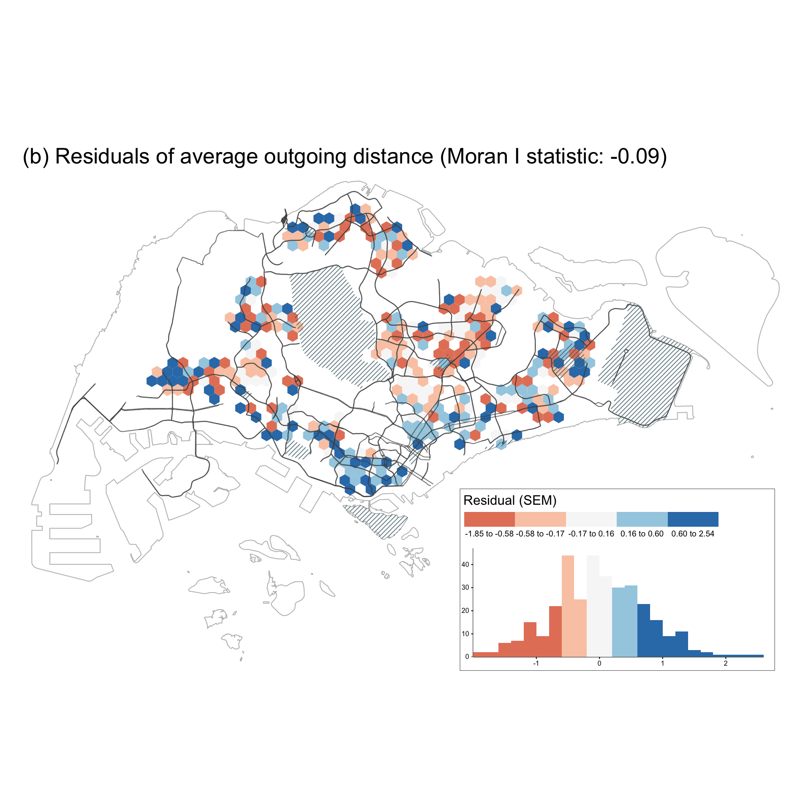
[1] "#E58267" "#FACAB2" "#F7F7F7" "#A4CEE3" "#327CB7"moran.test(sf_reg_outflow_dist$resid_error, dist_outflow_weights)
Moran I test under randomisation
data: sf_reg_outflow_dist$resid_error
weights: dist_outflow_weights
Moran I statistic standard deviate = -2.1469, p-value = 0.9841
alternative hypothesis: greater
sample estimates:
Moran I statistic Expectation Variance
-0.087498288 -0.002949853 0.001550940 Spatial Lag Model (SLM)
slm_outflow_dist <- spatialreg::lagsarlm(mean_dist_km ~ mean_resale_price_sqm + pct_1_2room_rental + pct_industrial_area + pct_residential_area + dist2MRT_km + dist_grid2center_km, data = reg_outflow_dist, listw = dist_outflow_weights)
summary(slm_outflow_dist)
Call:spatialreg::lagsarlm(formula = mean_dist_km ~ mean_resale_price_sqm +
pct_1_2room_rental + pct_industrial_area + pct_residential_area +
dist2MRT_km + dist_grid2center_km, data = reg_outflow_dist,
listw = dist_outflow_weights)
Residuals:
Min 1Q Median 3Q Max
-1.861709 -0.472194 -0.041032 0.468667 2.671780
Type: lag
Coefficients: (asymptotic standard errors)
Estimate Std. Error z value Pr(>|z|)
(Intercept) 2.8485e-01 5.4756e-01 0.5202 0.602906
mean_resale_price_sqm 1.9463e-04 7.6661e-05 2.5389 0.011122
pct_1_2room_rental 9.4911e-01 4.0605e-01 2.3374 0.019419
pct_industrial_area -2.9316e+00 1.1476e+00 -2.5545 0.010635
pct_residential_area 6.0660e-01 7.9433e-01 0.7637 0.445072
dist2MRT_km 1.0160e-01 9.9916e-02 1.0169 0.309214
dist_grid2center_km 5.1147e-02 1.5201e-02 3.3648 0.000766
Rho: 0.78256, LR test value: 315.41, p-value: < 2.22e-16
Asymptotic standard error: 0.028324
z-value: 27.629, p-value: < 2.22e-16
Wald statistic: 763.34, p-value: < 2.22e-16
Log likelihood: -423.0978 for lag model
ML residual variance (sigma squared): 0.5578, (sigma: 0.74686)
Number of observations: 340
Number of parameters estimated: 9
AIC: 864.2, (AIC for lm: 1177.6)
LM test for residual autocorrelation
test value: 16.49, p-value: 4.8904e-05impacts(slm_outflow_dist, listw = dist_outflow_weights)Impact measures (lag, exact):
Direct Indirect Total
mean_resale_price_sqm 0.0002625584 0.0006325316 0.00089509
pct_1_2room_rental 1.2803532205 3.0845087888 4.36486201
pct_industrial_area -3.9546677409 -9.5272204643 -13.48188821
pct_residential_area 0.8183019825 1.9713775985 2.78967958
dist2MRT_km 0.1370616717 0.3301963273 0.46725800
dist_grid2center_km 0.0689973217 0.1662219783 0.23521930sf_reg_outflow_dist$resid_lagsarlm <- residuals(slm_outflow_dist)
spatial_viz(sf_reg_outflow_dist,
fill_var = "resid_lagsarlm",
legend_title = "Residual (SLM)", palette = "RdBu",
main_title = "(b) Residuals of average outgoing distance (Moran I statistic: -0.08)",
main.title_size = 1.6,
legend.hist_height = 0.25, legend.hist_width = 0.5,
legend_width = 0.4, legend.hist_size = 0.5,
legend.title_size = 1.2, legend.text_size = 0.65)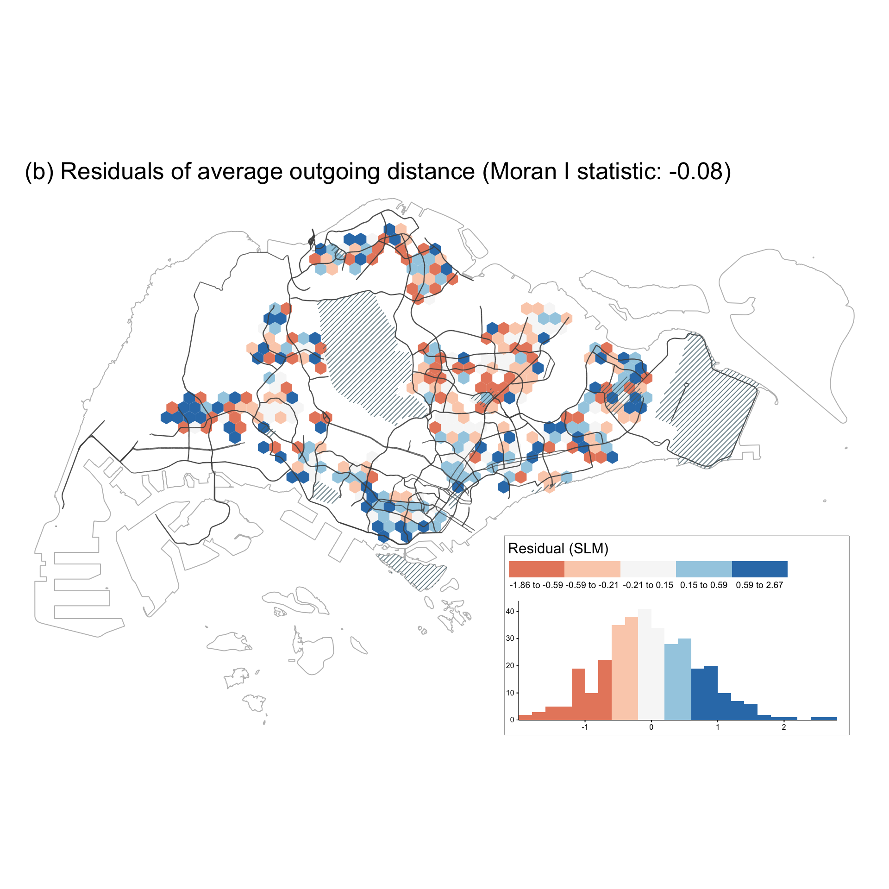
[1] "#E8896C" "#FBD0B9" "#F7F7F7" "#A4CEE3" "#327CB7"moran.test(sf_reg_outflow_dist$resid_lagsarlm, dist_outflow_weights)
Moran I test under randomisation
data: sf_reg_outflow_dist$resid_lagsarlm
weights: dist_outflow_weights
Moran I statistic standard deviate = -2.0151, p-value = 0.9781
alternative hypothesis: greater
sample estimates:
Moran I statistic Expectation Variance
-0.082296705 -0.002949853 0.001550404 # compare three models
AIC(ols_outflow_dist, slm_outflow_dist, sem_outflow_dist) df AIC
ols_outflow_dist 8 1177.6092
slm_outflow_dist 9 864.1956
sem_outflow_dist 9 862.2585Inflow diversity
reg_inflow_div <- mean_resale %>%
filter(grid_id %in% qualified_grids_inflow) %>%
left_join(., div_inflow %>% st_set_geometry(NULL) %>% dplyr::select(grid_id, norm_div_shannon)) %>%
left_join(., industrial_areas_grids %>% dplyr::select(grid_id, pct_industrial_area)) %>%
left_join(., residential_areas_grids %>% dplyr::select(grid_id, pct_residential_area)) %>%
left_join(., dist2MRT_nearest %>% dplyr::select(grid_id, dist2MRT_km)) %>%
left_join(., df_pct_1_2room_rental %>% dplyr::select(grid_id, pct_1_2room_rental)) %>%
left_join(., dist2_center_grid %>% dplyr::select(grid_id, dist_grid2center_km)) %>%
replace(., is.na(.), 0)
head(reg_inflow_div)# A tibble: 6 x 9
grid_id mean_resale_price… sd_resale_price_… norm_div_shannon pct_industrial_…
<dbl> <dbl> <dbl> <dbl> <dbl>
1 286 3685. 396. 0.720 0
2 304 3571. 323. 0.449 0
3 321 3808. 445. 0.602 0
4 338 4775. 464. 0.485 0.0936
5 339 3518. 253. 0.547 0
6 354 4186. 461. 0.507 0
# … with 4 more variables: pct_residential_area <dbl>, dist2MRT_km <dbl>,
# pct_1_2room_rental <dbl>, dist_grid2center_km <dbl>OLS
ols_inflow_div <- lm(norm_div_shannon ~ mean_resale_price_sqm + pct_1_2room_rental + pct_industrial_area + pct_residential_area + dist2MRT_km + dist_grid2center_km, data = reg_inflow_div)
summary(ols_inflow_div)
Call:
lm(formula = norm_div_shannon ~ mean_resale_price_sqm + pct_1_2room_rental +
pct_industrial_area + pct_residential_area + dist2MRT_km +
dist_grid2center_km, data = reg_inflow_div)
Residuals:
Min 1Q Median 3Q Max
-0.282743 -0.050921 0.004627 0.055192 0.230125
Coefficients:
Estimate Std. Error t value Pr(>|t|)
(Intercept) 8.797e-01 5.747e-02 15.307 <2e-16 ***
mean_resale_price_sqm 1.046e-05 8.105e-06 1.291 0.1977
pct_1_2room_rental -6.107e-02 4.352e-02 -1.403 0.1615
pct_industrial_area 7.263e-02 1.226e-01 0.593 0.5539
pct_residential_area 7.651e-02 8.403e-02 0.910 0.3632
dist2MRT_km -2.050e-02 1.063e-02 -1.928 0.0546 .
dist_grid2center_km -1.627e-02 1.571e-03 -10.351 <2e-16 ***
---
Signif. codes: 0 '***' 0.001 '**' 0.01 '*' 0.05 '.' 0.1 ' ' 1
Residual standard error: 0.08233 on 346 degrees of freedom
Multiple R-squared: 0.5152, Adjusted R-squared: 0.5068
F-statistic: 61.27 on 6 and 346 DF, p-value: < 2.2e-16spatial_viz(augment(ols_inflow_div, data = reg_inflow_div) %>% left_join(., grids) %>% st_as_sf(),
fill_var = ".resid", palette = "RdBu",
legend_title = "Residual (OLS)",
main_title = "(c) Residuals of inflow diversity (Moran I statistic: 0.69)",
main.title_size = 1.6,
legend.hist_height = 0.25, legend.hist_width = 0.5,
legend_width = 0.4, legend.hist_size = 0.5,
legend.title_size = 1.2, legend.text_size = 0.65)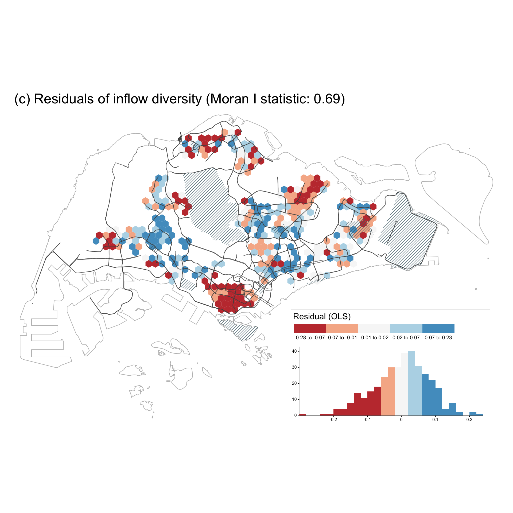
[1] "#C33B3C" "#F6B596" "#F7F7F7" "#B7D8E8" "#529DC8"Spatial Error (SEM) Models
sf_reg_inflow_div <- reg_inflow_div %>%
left_join(., grids) %>%
st_as_sf() %>%
st_transform(crs = 4326)
div_inflow_sp <- as(sf_reg_inflow_div, 'Spatial')
div_inflow_neighbors <- poly2nb(div_inflow_sp)
summary(div_inflow_neighbors)Neighbour list object:
Number of regions: 353
Number of nonzero links: 1466
Percentage nonzero weights: 1.17648
Average number of links: 4.152975
Link number distribution:
1 2 3 4 5 6
4 39 76 86 76 72
4 least connected regions:
128 244 247 302 with 1 link
72 most connected regions:
6 9 10 19 38 46 53 57 70 75 77 93 107 109 115 123 126 130 131 134 137 138 142 147 163 164 167 170 171 175 176 179 185 190 192 193 198 200 204 206 209 211 212 216 217 221 231 257 258 262 263 264 268 269 270 273 274 281 286 291 307 308 314 317 324 332 338 341 342 343 345 346 with 6 linksdiv_inflow_weights <- nb2listw(div_inflow_neighbors, style="W", zero.policy=TRUE)moran.test(div_inflow_sp$norm_div_shannon, div_inflow_weights)
Moran I test under randomisation
data: div_inflow_sp$norm_div_shannon
weights: div_inflow_weights
Moran I statistic standard deviate = 18.155, p-value < 2.2e-16
alternative hypothesis: greater
sample estimates:
Moran I statistic Expectation Variance
0.693791308 -0.002840909 0.001472379 sem_inflow_div <- spatialreg::errorsarlm(norm_div_shannon ~ mean_resale_price_sqm + pct_1_2room_rental + pct_industrial_area + pct_residential_area + dist2MRT_km + dist_grid2center_km, data = reg_inflow_div, listw = div_inflow_weights)
summary(sem_inflow_div)
Call:
spatialreg::errorsarlm(formula = norm_div_shannon ~ mean_resale_price_sqm +
pct_1_2room_rental + pct_industrial_area + pct_residential_area +
dist2MRT_km + dist_grid2center_km, data = reg_inflow_div,
listw = div_inflow_weights)
Residuals:
Min 1Q Median 3Q Max
-0.3017621 -0.0425634 0.0031422 0.0441823 0.2316963
Type: error
Coefficients: (asymptotic standard errors)
Estimate Std. Error z value Pr(>|z|)
(Intercept) 8.7745e-01 6.3804e-02 13.7522 < 2.2e-16
mean_resale_price_sqm 1.3020e-05 8.7738e-06 1.4840 0.137807
pct_1_2room_rental -1.0698e-02 3.6666e-02 -0.2918 0.770460
pct_industrial_area -1.2187e-01 1.1054e-01 -1.1025 0.270251
pct_residential_area 5.4874e-02 7.7424e-02 0.7087 0.478486
dist2MRT_km -3.7637e-02 1.2030e-02 -3.1287 0.001756
dist_grid2center_km -1.5665e-02 2.2159e-03 -7.0694 1.556e-12
Lambda: 0.57378, LR test value: 104.21, p-value: < 2.22e-16
Asymptotic standard error: 0.046713
z-value: 12.283, p-value: < 2.22e-16
Wald statistic: 150.87, p-value: < 2.22e-16
Log likelihood: 436.2011 for error model
ML residual variance (sigma squared): 0.0044611, (sigma: 0.066792)
Number of observations: 353
Number of parameters estimated: 9
AIC: -854.4, (AIC for lm: -752.19)sf_reg_inflow_div$resid_error <- residuals(sem_inflow_div)
spatial_viz(sf_reg_inflow_div,
fill_var = "resid_error",
legend_title = "Residual (SEM)", palette = "RdBu",
main_title = "(c) Residuals of inflow diversity (Moran I statistic: -0.05)",
main.title_size = 1.6,
legend.hist_height = 0.25, legend.hist_width = 0.5,
legend_width = 0.4, legend.hist_size = 0.5,
legend.title_size = 1.2, legend.text_size = 0.65)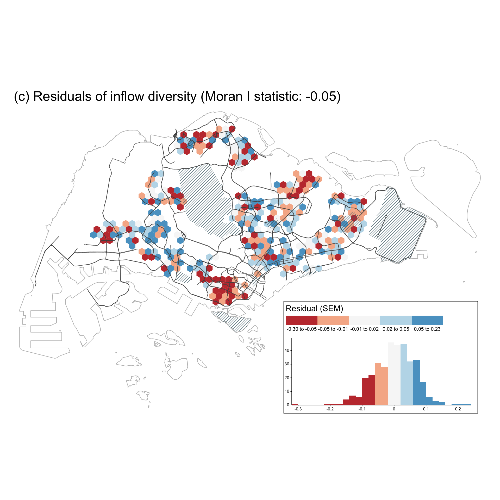
[1] "#C33B3C" "#F6B596" "#F7F7F7" "#BEDBEA" "#5AA2CB"moran.test(sf_reg_inflow_div$resid_error, div_inflow_weights)
Moran I test under randomisation
data: sf_reg_inflow_div$resid_error
weights: div_inflow_weights
Moran I statistic standard deviate = -1.2831, p-value = 0.9003
alternative hypothesis: greater
sample estimates:
Moran I statistic Expectation Variance
-0.051965537 -0.002840909 0.001465702 Spatial Lag Models (SLM):
slm_inflow_div <- spatialreg::lagsarlm(norm_div_shannon ~ mean_resale_price_sqm + pct_1_2room_rental + pct_industrial_area + pct_residential_area + dist2MRT_km +dist_grid2center_km, data = reg_inflow_div, listw = div_inflow_weights)
summary(slm_inflow_div)
Call:spatialreg::lagsarlm(formula = norm_div_shannon ~ mean_resale_price_sqm +
pct_1_2room_rental + pct_industrial_area + pct_residential_area +
dist2MRT_km + dist_grid2center_km, data = reg_inflow_div,
listw = div_inflow_weights)
Residuals:
Min 1Q Median 3Q Max
-0.3015421 -0.0418065 0.0038327 0.0436594 0.2440237
Type: lag
Coefficients: (asymptotic standard errors)
Estimate Std. Error z value Pr(>|z|)
(Intercept) 3.9600e-01 6.5163e-02 6.0770 1.224e-09
mean_resale_price_sqm 8.3093e-06 6.7330e-06 1.2341 0.21716
pct_1_2room_rental -3.4324e-02 3.6112e-02 -0.9505 0.34187
pct_industrial_area -2.2847e-02 1.0171e-01 -0.2246 0.82226
pct_residential_area 5.4756e-02 6.9728e-02 0.7853 0.43229
dist2MRT_km -2.0264e-02 8.8795e-03 -2.2821 0.02249
dist_grid2center_km -7.2208e-03 1.5370e-03 -4.6979 2.629e-06
Rho: 0.53395, LR test value: 94.032, p-value: < 2.22e-16
Asymptotic standard error: 0.04895
z-value: 10.908, p-value: < 2.22e-16
Wald statistic: 118.99, p-value: < 2.22e-16
Log likelihood: 431.1132 for lag model
ML residual variance (sigma squared): 0.0046661, (sigma: 0.068309)
Number of observations: 353
Number of parameters estimated: 9
AIC: -844.23, (AIC for lm: -752.19)
LM test for residual autocorrelation
test value: 7.4079, p-value: 0.0064937impacts(slm_inflow_div, listw = div_inflow_weights)Impact measures (lag, exact):
Direct Indirect Total
mean_resale_price_sqm 9.152345e-06 8.677103e-06 1.782945e-05
pct_1_2room_rental -3.780603e-02 -3.584292e-02 -7.364895e-02
pct_industrial_area -2.516523e-02 -2.385850e-02 -4.902373e-02
pct_residential_area 6.031150e-02 5.717978e-02 1.174913e-01
dist2MRT_km -2.231941e-02 -2.116046e-02 -4.347987e-02
dist_grid2center_km -7.953358e-03 -7.540374e-03 -1.549373e-02sf_reg_inflow_div$resid_lagsarlm <- residuals(slm_inflow_div)
spatial_viz(sf_reg_inflow_div,
fill_var = "resid_lagsarlm",
legend_title = "Residual (SLM)", palette = "RdBu",
main_title = "(c) Residuals of inflow diversity (Moran I statistic: -0.03)",
main.title_size = 1.6,
legend.hist_height = 0.25, legend.hist_width = 0.5,
legend_width = 0.4, legend.hist_size = 0.5,
legend.title_size = 1.2, legend.text_size = 0.65)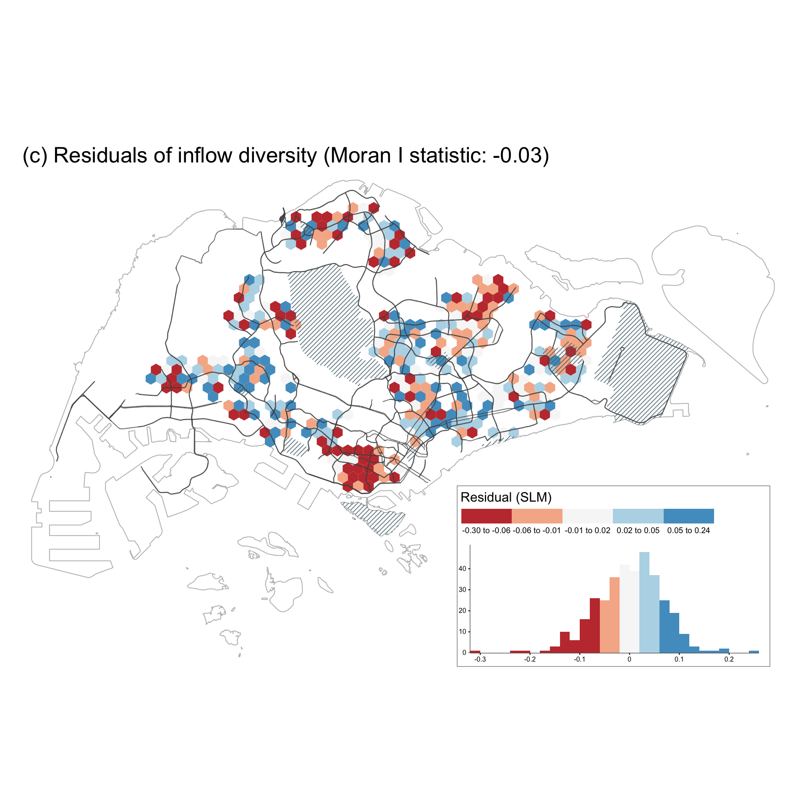
[1] "#C33B3C" "#F6B596" "#F7F7F7" "#B7D8E8" "#529DC8"moran.test(sf_reg_inflow_div$resid_lagsarlm, div_inflow_weights)
Moran I test under randomisation
data: sf_reg_inflow_div$resid_lagsarlm
weights: div_inflow_weights
Moran I statistic standard deviate = -0.77667, p-value = 0.7813
alternative hypothesis: greater
sample estimates:
Moran I statistic Expectation Variance
-0.032580095 -0.002840909 0.001466181 AIC(ols_inflow_div, slm_inflow_div, sem_inflow_div) df AIC
ols_inflow_div 8 -752.1945
slm_inflow_div 9 -844.2264
sem_inflow_div 9 -854.4022Outflow diversity
reg_outflow_div <- mean_resale %>%
filter(grid_id %in% qualified_grids_outflow) %>%
left_join(., div_outflow %>% st_set_geometry(NULL) %>% dplyr::select(grid_id, norm_div_shannon)) %>%
left_join(., industrial_areas_grids %>% dplyr::select(grid_id, pct_industrial_area)) %>%
left_join(., residential_areas_grids %>% dplyr::select(grid_id, pct_residential_area)) %>%
left_join(., dist2MRT_nearest %>% dplyr::select(grid_id, dist2MRT_km)) %>%
left_join(., df_pct_1_2room_rental %>% dplyr::select(grid_id, pct_1_2room_rental)) %>%
left_join(., dist2_center_grid %>% dplyr::select(grid_id, dist_grid2center_km)) %>%
replace(., is.na(.), 0)
head(reg_inflow_div)# A tibble: 6 x 9
grid_id mean_resale_price… sd_resale_price_… norm_div_shannon pct_industrial_…
<dbl> <dbl> <dbl> <dbl> <dbl>
1 286 3685. 396. 0.720 0
2 304 3571. 323. 0.449 0
3 321 3808. 445. 0.602 0
4 338 4775. 464. 0.485 0.0936
5 339 3518. 253. 0.547 0
6 354 4186. 461. 0.507 0
# … with 4 more variables: pct_residential_area <dbl>, dist2MRT_km <dbl>,
# pct_1_2room_rental <dbl>, dist_grid2center_km <dbl>OLS
ols_outflow_div <- lm(norm_div_shannon ~ mean_resale_price_sqm + pct_1_2room_rental + pct_industrial_area + pct_residential_area + dist2MRT_km + dist_grid2center_km, data = reg_outflow_div)
summary(ols_outflow_div)
Call:
lm(formula = norm_div_shannon ~ mean_resale_price_sqm + pct_1_2room_rental +
pct_industrial_area + pct_residential_area + dist2MRT_km +
dist_grid2center_km, data = reg_outflow_div)
Residuals:
Min 1Q Median 3Q Max
-0.52130 -0.05253 0.01568 0.08560 0.25775
Coefficients:
Estimate Std. Error t value Pr(>|t|)
(Intercept) 1.415e+00 8.705e-02 16.254 < 2e-16 ***
mean_resale_price_sqm -7.073e-05 1.226e-05 -5.768 1.83e-08 ***
pct_1_2room_rental -1.683e-01 6.625e-02 -2.541 0.01151 *
pct_industrial_area 3.053e-01 1.870e-01 1.633 0.10344
pct_residential_area 3.241e-01 1.297e-01 2.498 0.01299 *
dist2MRT_km -4.264e-02 1.627e-02 -2.621 0.00917 **
dist_grid2center_km -3.490e-02 2.386e-03 -14.624 < 2e-16 ***
---
Signif. codes: 0 '***' 0.001 '**' 0.01 '*' 0.05 '.' 0.1 ' ' 1
Residual standard error: 0.122 on 333 degrees of freedom
Multiple R-squared: 0.4907, Adjusted R-squared: 0.4815
F-statistic: 53.47 on 6 and 333 DF, p-value: < 2.2e-16spatial_viz(augment(ols_outflow_div, data = reg_outflow_div) %>% left_join(., grids) %>% st_as_sf(),
fill_var = ".resid", palette = "RdBu",
legend_title = "Residual (OLS)",
main_title = "(d) Residuals of outflow diversity (Moran I statistic: 0.83)",
main.title_size = 1.6,
legend.hist_height = 0.25, legend.hist_width = 0.5,
legend_width = 0.4, legend.hist_size = 0.5,
legend.title_size = 1.2, legend.text_size = 0.65)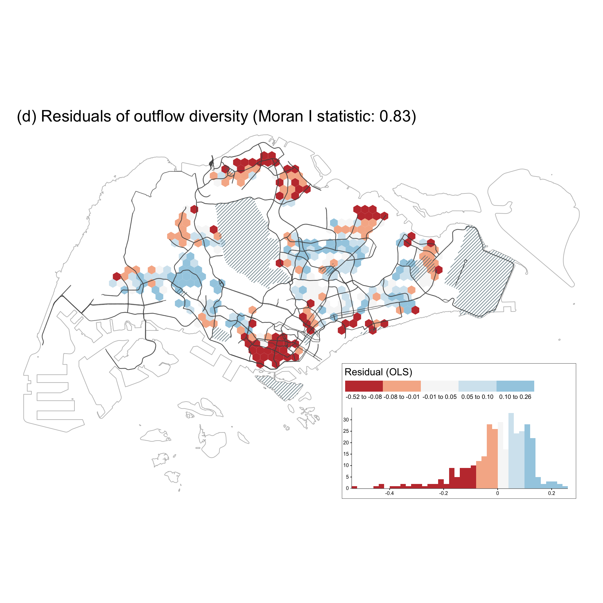
[1] "#C33B3C" "#F6B596" "#F7F7F7" "#D4E6F0" "#A4CEE3"sf_reg_outflow_div <- reg_outflow_div %>%
left_join(., grids) %>%
st_as_sf() %>%
st_transform(crs = 4326)
div_outflow_sp <- as(sf_reg_outflow_div, 'Spatial')
div_outflow_neighbors <- poly2nb(div_outflow_sp)
summary(div_outflow_neighbors)Neighbour list object:
Number of regions: 340
Number of nonzero links: 1398
Percentage nonzero weights: 1.209343
Average number of links: 4.111765
Link number distribution:
1 2 3 4 5 6
6 37 75 82 75 65
6 least connected regions:
30 47 113 233 236 290 with 1 link
65 most connected regions:
6 9 10 19 42 49 53 65 70 72 88 101 103 109 117 120 124 126 130 134 139 154 155 158 161 162 166 167 170 176 181 184 189 195 197 199 201 202 207 220 246 247 250 251 252 256 257 258 261 262 269 274 279 295 296 302 305 312 320 326 329 330 331 333 334 with 6 linksdiv_outflow_weights <- nb2listw(div_outflow_neighbors, style="W", zero.policy=TRUE)moran.test(div_outflow_sp$norm_div_shannon, div_outflow_weights)
Moran I test under randomisation
data: div_outflow_sp$norm_div_shannon
weights: div_outflow_weights
Moran I statistic standard deviate = 21.122, p-value < 2.2e-16
alternative hypothesis: greater
sample estimates:
Moran I statistic Expectation Variance
0.827636979 -0.002949853 0.001546279 Spatial Error (SEM) Models
sem_outflow_div <- spatialreg::errorsarlm(norm_div_shannon ~ mean_resale_price_sqm + pct_1_2room_rental + pct_industrial_area + pct_residential_area + dist2MRT_km + dist_grid2center_km, data = reg_outflow_div, listw = div_outflow_weights)
summary(sem_outflow_div)
Call:
spatialreg::errorsarlm(formula = norm_div_shannon ~ mean_resale_price_sqm +
pct_1_2room_rental + pct_industrial_area + pct_residential_area +
dist2MRT_km + dist_grid2center_km, data = reg_outflow_div,
listw = div_outflow_weights)
Residuals:
Min 1Q Median 3Q Max
-0.330392 -0.033828 0.012769 0.045078 0.206674
Type: error
Coefficients: (asymptotic standard errors)
Estimate Std. Error z value Pr(>|z|)
(Intercept) 1.0402e+00 8.1315e-02 12.7917 < 2.2e-16
mean_resale_price_sqm -1.0795e-05 1.0048e-05 -1.0743 0.282670
pct_1_2room_rental -2.7653e-02 4.0916e-02 -0.6758 0.499145
pct_industrial_area 5.3330e-02 1.2732e-01 0.4189 0.675324
pct_residential_area 1.5487e-01 8.5847e-02 1.8040 0.071232
dist2MRT_km -4.5331e-02 1.4362e-02 -3.1562 0.001598
dist_grid2center_km -2.6936e-02 4.0070e-03 -6.7224 1.788e-11
Lambda: 0.78611, LR test value: 276.51, p-value: < 2.22e-16
Asymptotic standard error: 0.028634
z-value: 27.454, p-value: < 2.22e-16
Wald statistic: 753.7, p-value: < 2.22e-16
Log likelihood: 374.6151 for error model
ML residual variance (sigma squared): 0.0050956, (sigma: 0.071384)
Number of observations: 340
Number of parameters estimated: 9
AIC: -731.23, (AIC for lm: -456.72)sf_reg_outflow_div$resid_error <- residuals(sem_outflow_div)
spatial_viz(sf_reg_outflow_div,
fill_var = "resid_error",
legend_title = "Residual (SEM)", palette = "RdBu",
main_title = "(d) Residuals of outflow diversity (Moran I statistic: -0.08)",
main.title_size = 1.6,
legend.hist_height = 0.25, legend.hist_width = 0.5,
legend_width = 0.4, legend.hist_size = 0.5,
legend.title_size = 1.2, legend.text_size = 0.65)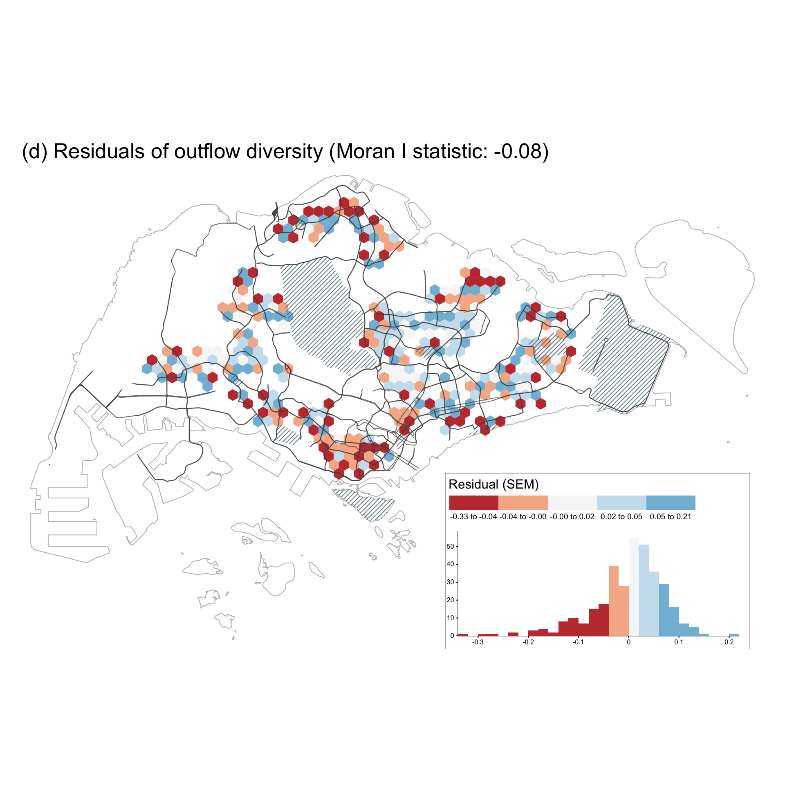
[1] "#C33B3C" "#F6B596" "#F7F7F7" "#CAE1EE" "#82BBD8"moran.test(sf_reg_outflow_div$resid_error, div_outflow_weights)
Moran I test under randomisation
data: sf_reg_outflow_div$resid_error
weights: div_outflow_weights
Moran I statistic standard deviate = -1.93, p-value = 0.9732
alternative hypothesis: greater
sample estimates:
Moran I statistic Expectation Variance
-0.078715371 -0.002949853 0.001541164 Spatial Lag Models (SLM):
slm_outflow_div <- spatialreg::lagsarlm(norm_div_shannon ~ mean_resale_price_sqm + pct_1_2room_rental + pct_industrial_area + pct_residential_area + dist2MRT_km + dist_grid2center_km, data = reg_outflow_div, listw = div_outflow_weights)
summary(slm_outflow_div)
Call:spatialreg::lagsarlm(formula = norm_div_shannon ~ mean_resale_price_sqm +
pct_1_2room_rental + pct_industrial_area + pct_residential_area +
dist2MRT_km + dist_grid2center_km, data = reg_outflow_div,
listw = div_outflow_weights)
Residuals:
Min 1Q Median 3Q Max
-0.334087 -0.035365 0.010145 0.046122 0.201250
Type: lag
Coefficients: (asymptotic standard errors)
Estimate Std. Error z value Pr(>|z|)
(Intercept) 3.7667e-01 6.6190e-02 5.6907 1.265e-08
mean_resale_price_sqm -2.0634e-05 7.5228e-06 -2.7428 0.006092
pct_1_2room_rental -5.4066e-02 3.9605e-02 -1.3651 0.172209
pct_industrial_area 7.8100e-02 1.1172e-01 0.6991 0.484497
pct_residential_area 1.4265e-01 7.7670e-02 1.8366 0.066267
dist2MRT_km -2.9105e-02 9.9039e-03 -2.9388 0.003295
dist_grid2center_km -9.3834e-03 1.7344e-03 -5.4102 6.297e-08
Rho: 0.75238, LR test value: 272.44, p-value: < 2.22e-16
Asymptotic standard error: 0.030895
z-value: 24.352, p-value: < 2.22e-16
Wald statistic: 593.04, p-value: < 2.22e-16
Log likelihood: 372.5805 for lag model
ML residual variance (sigma squared): 0.0053062, (sigma: 0.072844)
Number of observations: 340
Number of parameters estimated: 9
AIC: -727.16, (AIC for lm: -456.72)
LM test for residual autocorrelation
test value: 8.6884, p-value: 0.0032024impacts(slm_outflow_div, listw = div_outflow_weights)Impact measures (lag, exact):
Direct Indirect Total
mean_resale_price_sqm -2.677017e-05 -5.655649e-05 -8.332666e-05
pct_1_2room_rental -7.014541e-02 -1.481940e-01 -2.183394e-01
pct_industrial_area 1.013274e-01 2.140712e-01 3.153985e-01
pct_residential_area 1.850751e-01 3.910024e-01 5.760775e-01
dist2MRT_km -3.776132e-02 -7.977717e-02 -1.175385e-01
dist_grid2center_km -1.217409e-02 -2.571982e-02 -3.789391e-02sf_reg_outflow_div$resid_lagsarlm <- residuals(slm_outflow_div)
spatial_viz(sf_reg_outflow_div,
fill_var = "resid_lagsarlm",
legend_title = "Residual (SLM)", palette = "-RdBu",
main_title = "(d) Residuals of outflow diversity (Moran I statistic: -0.06)",
main.title_size = 1.6,
legend.hist_height = 0.25, legend.hist_width = 0.5,
legend_width = 0.4, legend.hist_size = 0.5,
legend.title_size = 1.2, legend.text_size = 0.65)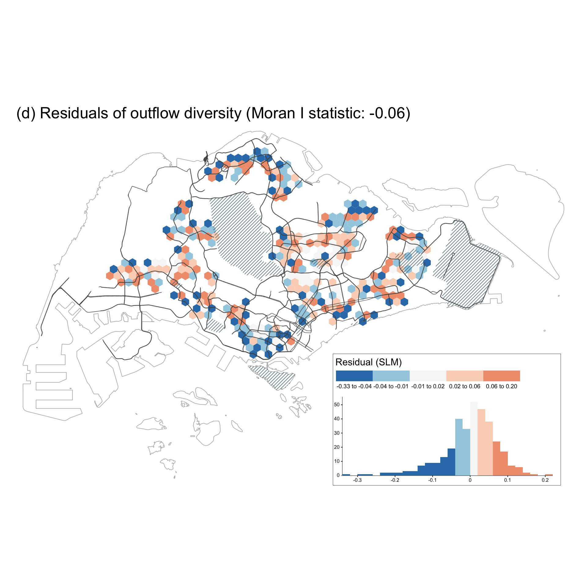
[1] "#327CB7" "#A4CEE3" "#F7F7F7" "#FCD5C0" "#F19E7C"moran.test(sf_reg_outflow_div$resid_lagsarlm, div_outflow_weights)
Moran I test under randomisation
data: sf_reg_outflow_div$resid_lagsarlm
weights: div_outflow_weights
Moran I statistic standard deviate = -1.4211, p-value = 0.9224
alternative hypothesis: greater
sample estimates:
Moran I statistic Expectation Variance
-0.058732644 -0.002949853 0.001540864 AIC(ols_outflow_div, slm_outflow_div, sem_outflow_div) df AIC
ols_outflow_div 8 -456.7188
slm_outflow_div 9 -727.1609
sem_outflow_div 9 -731.2302
sessionInfo()R version 4.0.4 (2021-02-15)
Platform: x86_64-apple-darwin17.0 (64-bit)
Running under: macOS Big Sur 10.16
Matrix products: default
BLAS: /Library/Frameworks/R.framework/Versions/4.0/Resources/lib/libRblas.dylib
LAPACK: /Library/Frameworks/R.framework/Versions/4.0/Resources/lib/libRlapack.dylib
locale:
[1] en_US.UTF-8/en_US.UTF-8/en_US.UTF-8/C/en_US.UTF-8/en_US.UTF-8
attached base packages:
[1] stats graphics grDevices utils datasets methods base
other attached packages:
[1] stargazer_5.2.2 PerformanceAnalytics_2.0.4
[3] xts_0.12.1 zoo_1.8-8
[5] spdep_1.1-5 spData_0.3.8
[7] sp_1.4-5 broom_0.7.5
[9] here_1.0.1 purrrogress_0.1.1
[11] RColorBrewer_1.1-2 stars_0.5-1
[13] abind_1.4-5 tmap_3.3-1
[15] lubridate_1.7.10 sf_0.9-7
[17] forcats_0.5.1 stringr_1.4.0
[19] dplyr_1.0.5 purrr_0.3.4
[21] readr_1.4.0 tidyr_1.1.3
[23] tibble_3.1.0 ggplot2_3.3.3
[25] tidyverse_1.3.0
loaded via a namespace (and not attached):
[1] pkgcond_0.1.0 leafem_0.1.3 colorspace_2.0-0
[4] deldir_0.2-10 ellipsis_0.3.1 class_7.3-18
[7] rgdal_1.5-23 leaflet_2.0.4.1 rprojroot_2.0.2
[10] testextra_0.1.0.9000 base64enc_0.1-3 fs_1.5.0
[13] dichromat_2.0-0 rstudioapi_0.13 farver_2.1.0
[16] fansi_0.4.2 xml2_1.3.2 codetools_0.2-18
[19] splines_4.0.4 knitr_1.31 jsonlite_1.7.2
[22] workflowr_1.6.2 tmaptools_3.1-1 dbplyr_2.1.0
[25] png_0.1-7 compiler_4.0.4 httr_1.4.2
[28] backports_1.2.1 assertthat_0.2.1 Matrix_1.3-2
[31] cli_2.3.1 later_1.1.0.1 htmltools_0.5.1.1
[34] tools_4.0.4 coda_0.19-4 gtable_0.3.0
[37] glue_1.4.2 gmodels_2.18.1 Rcpp_1.0.6
[40] cellranger_1.1.0 jquerylib_0.1.3 raster_3.4-5
[43] vctrs_0.3.6 gdata_2.18.0 nlme_3.1-152
[46] leafsync_0.1.0 crosstalk_1.1.1 lwgeom_0.2-5
[49] xfun_0.21 testthat_3.0.2 rvest_0.3.6
[52] lifecycle_1.0.0 gtools_3.8.2 XML_3.99-0.5
[55] postlogic_0.1.0.1 LearnBayes_2.15.1 MASS_7.3-53
[58] scales_1.1.1 hms_1.0.0 promises_1.2.0.1
[61] parallel_4.0.4 expm_0.999-6 spatialreg_1.1-5
[64] yaml_2.2.1 sass_0.3.1 stringi_1.5.3
[67] highr_0.8 spDataLarge_0.5.1 e1071_1.7-4
[70] boot_1.3-26 rlang_0.4.10 pkgconfig_2.0.3
[73] evaluate_0.14 lattice_0.20-41 labeling_0.4.2
[76] htmlwidgets_1.5.3 tidyselect_1.1.0 magrittr_2.0.1
[79] R6_2.5.0 generics_0.1.0 DBI_1.1.1
[82] pillar_1.5.1 haven_2.3.1 whisker_0.4
[85] withr_2.4.1 units_0.6-7 modelr_0.1.8
[88] crayon_1.4.1 KernSmooth_2.23-18 utf8_1.1.4
[91] rmarkdown_2.7 grid_4.0.4 readxl_1.3.1
[94] git2r_0.28.0 reprex_1.0.0 digest_0.6.27
[97] classInt_0.4-3 httpuv_1.5.5 munsell_0.5.0
[100] viridisLite_0.3.0 bslib_0.2.4 quadprog_1.5-8
[103] parsetools_0.1.3